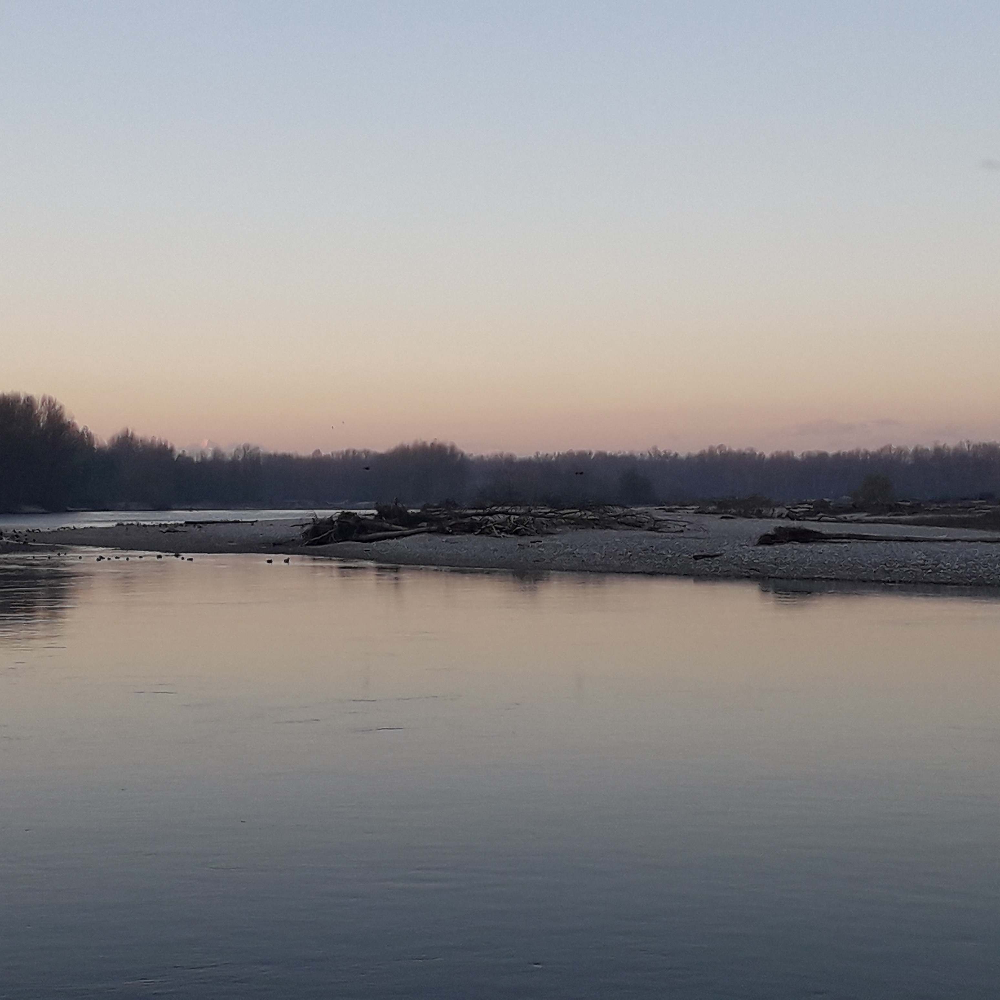
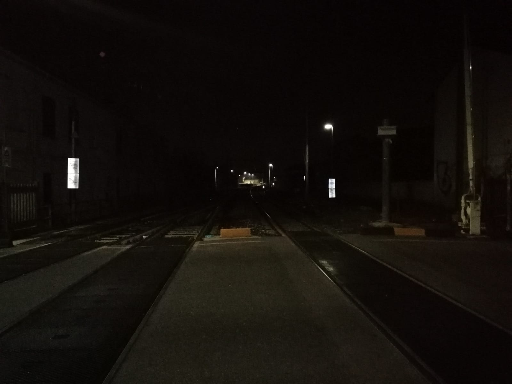
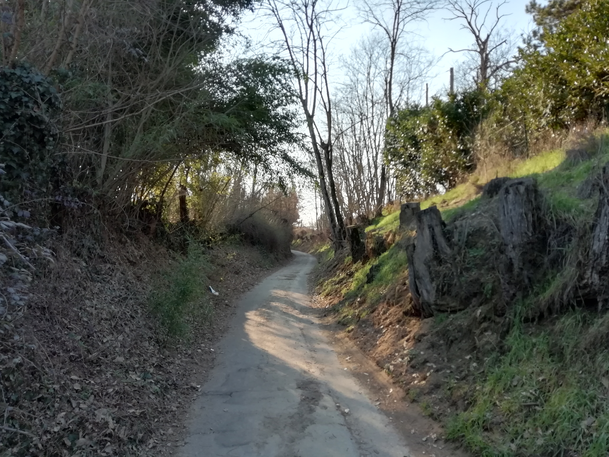
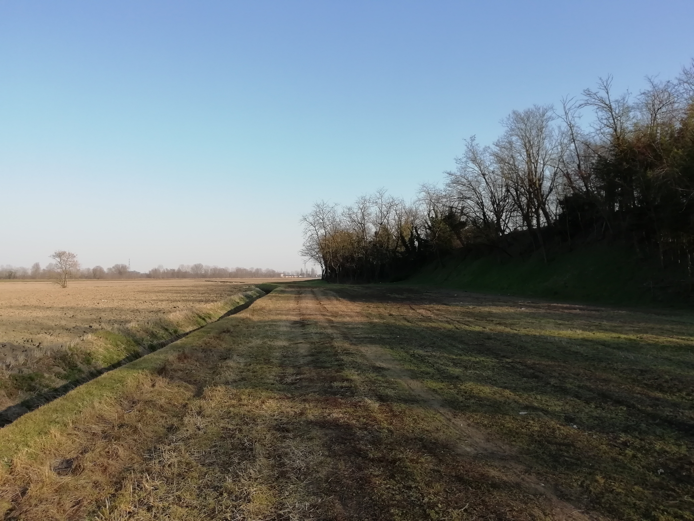
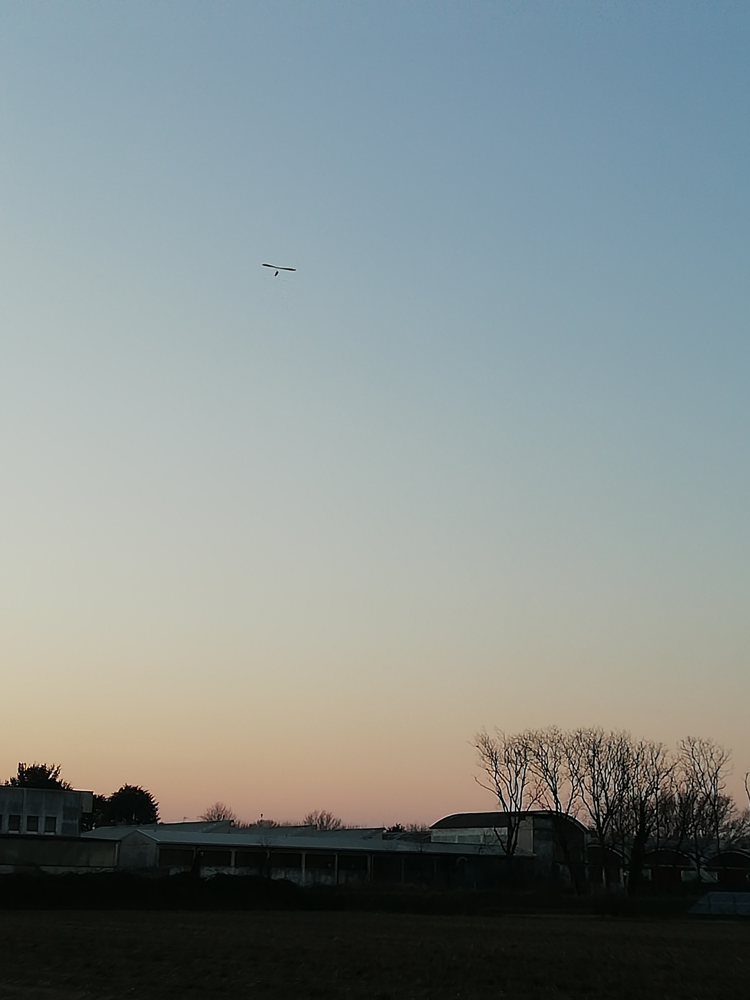
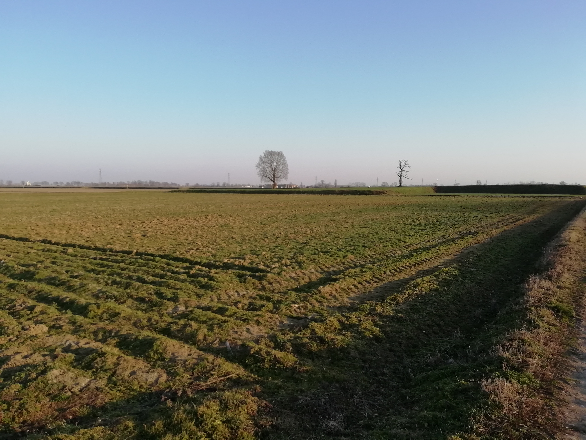
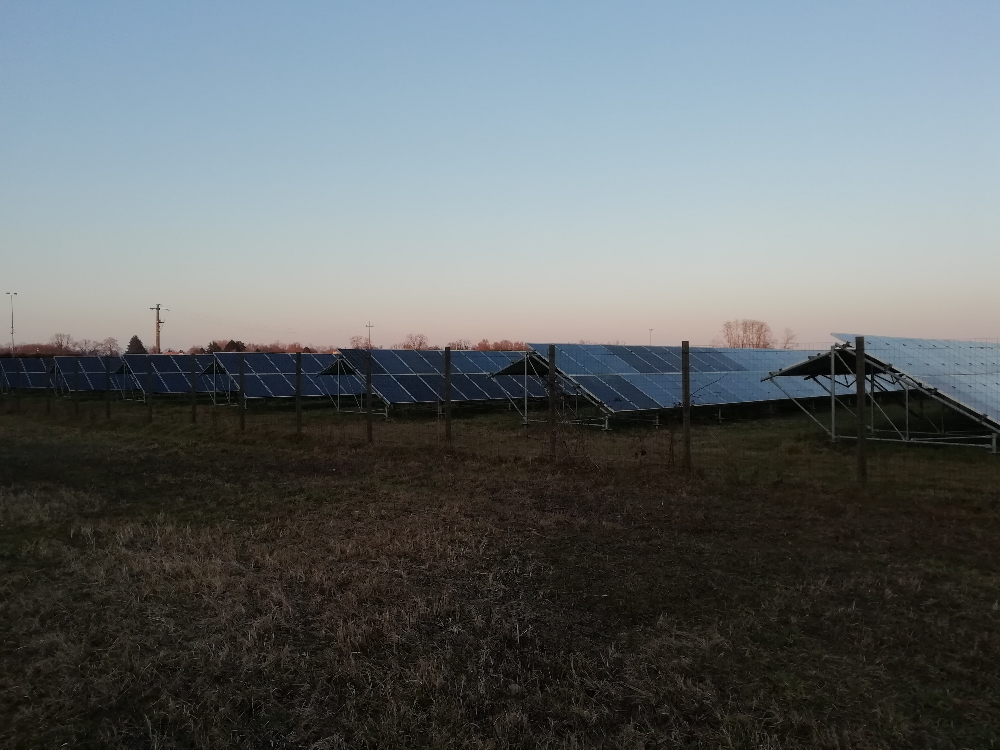
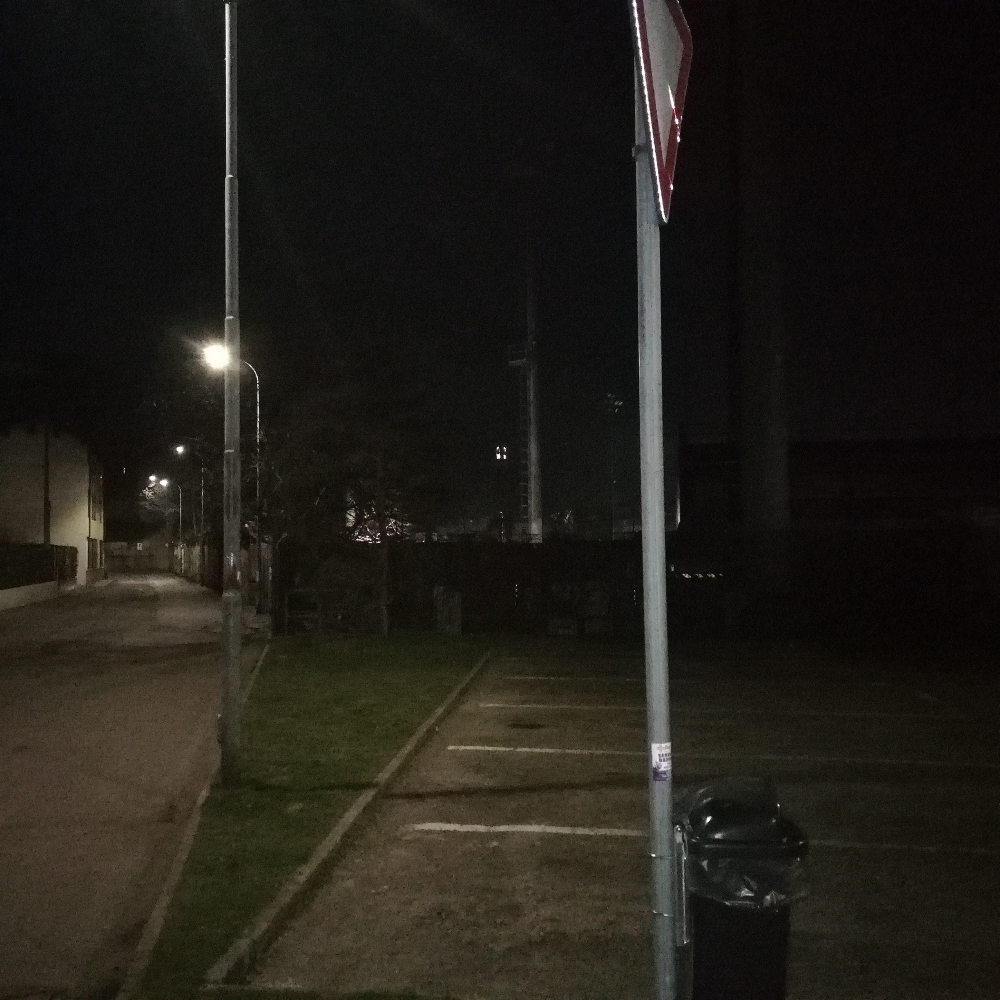

<!DOCTYPE html>
<head>
    <meta http-equiv="content-type" content="text/html; charset=UTF-8" />

        <script>
            L_NO_TOUCH = false;
            L_DISABLE_3D = false;
        </script>

    <style>html, body {width: 100%;height: 100%;margin: 0;padding: 0;}</style>
    <style>#map {position:absolute;top:0;bottom:0;right:0;left:0;}</style>
<script src="https://cdn.jsdelivr.net/npm/leaflet@1.6.0/dist/leaflet.js"></script>
<link rel="stylesheet" href="lib/EasyButton-master/src/easy-button.css">
<script src="lib/EasyButton-master/src/easy-button.js"></script>
    <script src="https://code.jquery.com/jquery-1.12.4.min.js"></script>
    <script src="https://maxcdn.bootstrapcdn.com/bootstrap/3.2.0/js/bootstrap.min.js"></script>
    <script src="https://cdnjs.cloudflare.com/ajax/libs/Leaflet.awesome-markers/2.0.2/leaflet.awesome-markers.js"></script>
    <link rel="stylesheet" href="https://cdn.jsdelivr.net/npm/leaflet@1.6.0/dist/leaflet.css"/>
    <link rel="stylesheet" href="https://maxcdn.bootstrapcdn.com/bootstrap/3.2.0/css/bootstrap.min.css"/>
    <link rel="stylesheet" href="https://maxcdn.bootstrapcdn.com/bootstrap/3.2.0/css/bootstrap-theme.min.css"/>
    <link rel="stylesheet" href="https://maxcdn.bootstrapcdn.com/font-awesome/4.6.3/css/font-awesome.min.css"/>
    <link rel="stylesheet" href="https://cdnjs.cloudflare.com/ajax/libs/Leaflet.awesome-markers/2.0.2/leaflet.awesome-markers.css"/>
    <link rel="stylesheet" href="https://cdn.jsdelivr.net/gh/python-visualization/folium/folium/templates/leaflet.awesome.rotate.min.css"/>

            <meta name="viewport" content="width=device-width,
                initial-scale=1.0, maximum-scale=1.0, user-scalable=no" />
            <style>
                #map_63a35c1e0bd34c3bb7d8c932fd42220e {
                    position: relative;
                    width: 100.0%;
                    height: 100.0%;
                    left: 0.0%;
                    top: 0.0%;
                }
            </style>

</head>
<body>

            <div class="folium-map" id="map_63a35c1e0bd34c3bb7d8c932fd42220e" ></div>

</body>
<script>


            var marker_035478223fd444999a6d5e2316105525 = L.marker(
                [45.3230625, 8.850245651],
                {}
            );


        var custom_icon_47c736a7a8c344718511c3b883d2b45e = L.icon({"iconSize": [30, 30], "iconUrl": "https://emojipedia-us.s3.dualstack.us-west-1.amazonaws.com/thumbs/160/microsoft/74/motor-scooter_1f6f5.png"});
        marker_035478223fd444999a6d5e2316105525.setIcon(custom_icon_47c736a7a8c344718511c3b883d2b45e);


        var popup_c9dfa1ebe6094151b366c90e0b91710a = L.popup({"maxWidth": "270"});


            var html_92e705d6b6dc4de1a94041830597fd2a = $(`<div id="html_92e705d6b6dc4de1a94041830597fd2a" style="width: 100.0%; height: 100.0%;"><h1 style = "font-size: 30px;"><b>Pizzeria</b></h1><a href="mailto:info@ecologiaacustica.org?subject=PAESAGGIO SONORO --- [segnalazione] --- audio: Pizzeria"><i><br>Facci sapere cosa ne pensi di questo audio!</a><audio id="audio_GU_VIALE_MONTEGRAPPA_PIZZERIA" loop> <source src="dati/GU_VIALE_MONTEGRAPPA_PIZZERIA/pizzeria.ogg" type="audio/ogg"> </audio></div>`)[0];
            popup_c9dfa1ebe6094151b366c90e0b91710a.setContent(html_92e705d6b6dc4de1a94041830597fd2a);


        marker_035478223fd444999a6d5e2316105525.bindPopup(popup_c9dfa1ebe6094151b366c90e0b91710a)
marker_035478223fd444999a6d5e2316105525.on('click', function (e) {this.openPopup(); document.getElementById('audio_GU_VIALE_MONTEGRAPPA_PIZZERIA').play();});
        ;


            var marker_a9ae51adfb7e4f6ea6a81d5aafa2acef = L.marker(
                [45.31211904, 8.860001045],
                {}
            );


        var custom_icon_1bd95fcb95f94dc8bdaf67cb1167a6e9 = L.icon({"iconSize": [30, 30], "iconUrl": "https://emojipedia-us.s3.dualstack.us-west-1.amazonaws.com/thumbs/160/microsoft/74/water-wave_1f30a.png"});
        marker_a9ae51adfb7e4f6ea6a81d5aafa2acef.setIcon(custom_icon_1bd95fcb95f94dc8bdaf67cb1167a6e9);


        var popup_2162a2b00a8441ff92a6aa1a1c4ad259 = L.popup({"maxWidth": "270"});


            var html_19e8feb3faf044d5932f074f0c3b32f5 = $(`<div id="html_19e8feb3faf044d5932f074f0c3b32f5" style="width: 100.0%; height: 100.0%;"><h1 style = "font-size: 30px;"><b>Giacchetta Canale</b></h1><a href="mailto:info@ecologiaacustica.org?subject=PAESAGGIO SONORO --- [segnalazione] --- audio: Giacchetta Canale"><i><br>Facci sapere cosa ne pensi di questo audio!</a><audio id="audio_GU_GIACCHETTA_CANALE" loop> <source src="dati/GU_GIACCHETTA_CANALE/ZOOM0027.ogg" type="audio/ogg"> </audio></div>`)[0];
            popup_2162a2b00a8441ff92a6aa1a1c4ad259.setContent(html_19e8feb3faf044d5932f074f0c3b32f5);


        marker_a9ae51adfb7e4f6ea6a81d5aafa2acef.bindPopup(popup_2162a2b00a8441ff92a6aa1a1c4ad259)
marker_a9ae51adfb7e4f6ea6a81d5aafa2acef.on('click', function (e) {this.openPopup(); document.getElementById('audio_GU_GIACCHETTA_CANALE').play();});
        ;


            var marker_9ea14c1f817c489585c3ef0e53c9dfa4 = L.marker(
                [45.3064081, 8.866924562],
                {}
            );


        var custom_icon_1c0d161c845541e9959e96ab654847b0 = L.icon({"iconSize": [30, 30], "iconUrl": "https://emojipedia-us.s3.dualstack.us-west-1.amazonaws.com/thumbs/60/microsoft/74/umbrella-with-rain-drops_2614.png"});
        marker_9ea14c1f817c489585c3ef0e53c9dfa4.setIcon(custom_icon_1c0d161c845541e9959e96ab654847b0);


        var popup_81f95bdd8e3c4fccab5d0282bb3454c5 = L.popup({"maxWidth": "270"});


            var html_285c91763c9c4719b36a78b15b2aaddb = $(`<div id="html_285c91763c9c4719b36a78b15b2aaddb" style="width: 100.0%; height: 100.0%;"><h1 style = "font-size: 30px;"><b>Via de chirico Canale Pioggia</b></h1><a href="mailto:info@ecologiaacustica.org?subject=PAESAGGIO SONORO --- [segnalazione] --- audio: Via de chirico Canale Pioggia"><i><br>Facci sapere cosa ne pensi di questo audio!</a><audio id="audio_GU_VIA_DE_CHIRICO_CANALE_v2" loop> <source src="dati/GU_VIA_DE_CHIRICO_CANALE_v2/ZOOM0029.ogg" type="audio/ogg"> </audio></div>`)[0];
            popup_81f95bdd8e3c4fccab5d0282bb3454c5.setContent(html_285c91763c9c4719b36a78b15b2aaddb);


        marker_9ea14c1f817c489585c3ef0e53c9dfa4.bindPopup(popup_81f95bdd8e3c4fccab5d0282bb3454c5)
marker_9ea14c1f817c489585c3ef0e53c9dfa4.on('click', function (e) {this.openPopup(); document.getElementById('audio_GU_VIA_DE_CHIRICO_CANALE_v2').play();});
        ;


            var marker_764035db78924976a50db999815e2974 = L.marker(
                [45.30644102, 8.889899845],
                {}
            );


        var custom_icon_d212a39d192e486ca9b9b502cae85d42 = L.icon({"iconSize": [30, 30], "iconUrl": "https://emojipedia-us.s3.dualstack.us-west-1.amazonaws.com/thumbs/60/microsoft/74/fallen-leaf_1f342.png"});
        marker_764035db78924976a50db999815e2974.setIcon(custom_icon_d212a39d192e486ca9b9b502cae85d42);


        var popup_e0dc0af11cdf402eb8702d1d14a97b9d = L.popup({"maxWidth": "270"});


            var html_8edc3746a1c84769a5a5e55032ce7de5 = $(`<div id="html_8edc3746a1c84769a5a5e55032ce7de5" style="width: 100.0%; height: 100.0%;"><h1 style = "font-size: 30px;"><b>Strada per laghi di santa marta</b></h1><a href="mailto:info@ecologiaacustica.org?subject=PAESAGGIO SONORO --- [segnalazione] --- audio: Strada per laghi di santa marta"><i><br>Facci sapere cosa ne pensi di questo audio!</a><audio id="audio_GU_AGRITURISMO_COLDIRETTI" loop> <source src="dati/GU_AGRITURISMO_COLDIRETTI/ZOOM0025.ogg" type="audio/ogg"> </audio></div>`)[0];
            popup_e0dc0af11cdf402eb8702d1d14a97b9d.setContent(html_8edc3746a1c84769a5a5e55032ce7de5);


        marker_764035db78924976a50db999815e2974.bindPopup(popup_e0dc0af11cdf402eb8702d1d14a97b9d)
marker_764035db78924976a50db999815e2974.on('click', function (e) {this.openPopup(); document.getElementById('audio_GU_AGRITURISMO_COLDIRETTI').play();});
        ;


            var marker_567c14e0cd1e42bfa3077769465e24db = L.marker(
                [45.29917137, 8.905742693],
                {}
            );


        var custom_icon_0fcc882001e24f398dc2266045fd36ef = L.icon({"iconSize": [30, 30], "iconUrl": "https://emojipedia-us.s3.dualstack.us-west-1.amazonaws.com/thumbs/160/microsoft/74/bird_1f426.png"});
        marker_567c14e0cd1e42bfa3077769465e24db.setIcon(custom_icon_0fcc882001e24f398dc2266045fd36ef);


        var popup_f577f97026f54977a1c077d3a31bb5c4 = L.popup({"maxWidth": "270"});


            var html_847c9e681bac4bd6a383d7e20f612de1 = $(`<div id="html_847c9e681bac4bd6a383d7e20f612de1" style="width: 100.0%; height: 100.0%;"><h1 style = "font-size: 30px;"><b>Laghetto dei piccoli</b></h1><a href="mailto:info@ecologiaacustica.org?subject=PAESAGGIO SONORO --- [segnalazione] --- audio: Laghetto dei piccoli"><i><br>Facci sapere cosa ne pensi di questo audio!</a><audio id="audio_GU_LAGHETTO_DEI_PICCOLI" loop> <source src="dati/GU_LAGHETTO_DEI_PICCOLI/ZOOM0033.ogg" type="audio/ogg"> </audio></div>`)[0];
            popup_f577f97026f54977a1c077d3a31bb5c4.setContent(html_847c9e681bac4bd6a383d7e20f612de1);


        marker_567c14e0cd1e42bfa3077769465e24db.bindPopup(popup_f577f97026f54977a1c077d3a31bb5c4)
marker_567c14e0cd1e42bfa3077769465e24db.on('click', function (e) {this.openPopup(); document.getElementById('audio_GU_LAGHETTO_DEI_PICCOLI').play();});
        ;


            var marker_232376372306413d8e59af2edb78dab3 = L.marker(
                [45.31246512, 8.883821165],
                {}
            );


        var custom_icon_0cf6a9364b874b2885254b8c0b649858 = L.icon({"iconSize": [30, 30], "iconUrl": "https://emojipedia-us.s3.dualstack.us-west-1.amazonaws.com/thumbs/60/microsoft/74/cat_1f408.png"});
        marker_232376372306413d8e59af2edb78dab3.setIcon(custom_icon_0cf6a9364b874b2885254b8c0b649858);


        var popup_3b1520d7c24a478daf3bc911337dddf9 = L.popup({"maxWidth": "270"});


            var html_3945a9d9821540db8b602e71aaad45b0 = $(`<div id="html_3945a9d9821540db8b602e71aaad45b0" style="width: 100.0%; height: 100.0%;"><h1 style = "font-size: 30px;"><b>Miciopolis</b></h1><a href="mailto:info@ecologiaacustica.org?subject=PAESAGGIO SONORO --- [segnalazione] --- audio: Miciopolis"><i><br>Facci sapere cosa ne pensi di questo audio!</a><audio id="audio_GU_MICIOPOLIS" loop> <source src="dati/GU_MICIOPOLIS/ZOOM0022.ogg" type="audio/ogg"> </audio></div>`)[0];
            popup_3b1520d7c24a478daf3bc911337dddf9.setContent(html_3945a9d9821540db8b602e71aaad45b0);


        marker_232376372306413d8e59af2edb78dab3.bindPopup(popup_3b1520d7c24a478daf3bc911337dddf9)
marker_232376372306413d8e59af2edb78dab3.on('click', function (e) {this.openPopup(); document.getElementById('audio_GU_MICIOPOLIS').play();});
        ;


            var marker_29515840e5264dfdbc8093612578cf95 = L.marker(
                [45.30433837, 8.883231356],
                {}
            );


        var custom_icon_29f98ef9eca24456b8323a46ad219158 = L.icon({"iconSize": [30, 30], "iconUrl": "https://emojipedia-us.s3.dualstack.us-west-1.amazonaws.com/thumbs/160/microsoft/74/water-wave_1f30a.png"});
        marker_29515840e5264dfdbc8093612578cf95.setIcon(custom_icon_29f98ef9eca24456b8323a46ad219158);


        var popup_037324a1b42b450da3cb319abeb9a0f2 = L.popup({"maxWidth": "270"});


            var html_4f46a780637b48838779816af0559aa5 = $(`<div id="html_4f46a780637b48838779816af0559aa5" style="width: 100.0%; height: 100.0%;"><h1 style = "font-size: 30px;"><b>Strada per la Sforzesca</b></h1><br><a href="mailto:info@ecologiaacustica.org?subject=PAESAGGIO SONORO --- [segnalazione] --- audio: Strada per la Sforzesca"><i><br>Facci sapere cosa ne pensi di questo audio!</a><audio id="audio_GU_STRADA_REBUFFI" loop> <source src="dati/GU_STRADA_REBUFFI/ZOOM0024.ogg" type="audio/ogg"> </audio></div>`)[0];
            popup_037324a1b42b450da3cb319abeb9a0f2.setContent(html_4f46a780637b48838779816af0559aa5);


        marker_29515840e5264dfdbc8093612578cf95.bindPopup(popup_037324a1b42b450da3cb319abeb9a0f2)
marker_29515840e5264dfdbc8093612578cf95.on('click', function (e) {this.openPopup(); document.getElementById('audio_GU_STRADA_REBUFFI').play();});
        ;


            var marker_54bf213421784827b1d2103d6e42977b = L.marker(
                [45.29236968, 8.884778005],
                {}
            );


        var custom_icon_0b6ded0e1dfc41dbbb57bb11aa92bb4d = L.icon({"iconSize": [30, 30], "iconUrl": "https://emojipedia-us.s3.dualstack.us-west-1.amazonaws.com/thumbs/60/microsoft/74/fog_1f32b.png"});
        marker_54bf213421784827b1d2103d6e42977b.setIcon(custom_icon_0b6ded0e1dfc41dbbb57bb11aa92bb4d);


        var popup_4c7188404d114681897501a305d8c546 = L.popup({"maxWidth": "270"});


            var html_93cc451cfc704e60937e85b40cdb31f9 = $(`<div id="html_93cc451cfc704e60937e85b40cdb31f9" style="width: 100.0%; height: 100.0%;"><h1 style = "font-size: 30px;"><b>Cimitero musicale</b></h1><br><a href="mailto:info@ecologiaacustica.org?subject=PAESAGGIO SONORO --- [segnalazione] --- audio: Cimitero musicale"><i><br>Facci sapere cosa ne pensi di questo audio!</a><audio id="audio_GU_STRADA_REBUFFI_v3" loop> <source src="dati/GU_STRADA_REBUFFI_v3/ZOOM0028.ogg" type="audio/ogg"> </audio></div>`)[0];
            popup_4c7188404d114681897501a305d8c546.setContent(html_93cc451cfc704e60937e85b40cdb31f9);


        marker_54bf213421784827b1d2103d6e42977b.bindPopup(popup_4c7188404d114681897501a305d8c546)
marker_54bf213421784827b1d2103d6e42977b.on('click', function (e) {this.openPopup(); document.getElementById('audio_GU_STRADA_REBUFFI_v3').play();});
        ;


            var marker_2d2f6e0d25f4485ba5b0f058202e9e4e = L.marker(
                [45.34084406, 8.867725439],
                {}
            );


        var custom_icon_c39cbb0c1ebf4e23ac381acfbd8124ca = L.icon({"iconSize": [30, 30], "iconUrl": "https://emojipedia-us.s3.dualstack.us-west-1.amazonaws.com/thumbs/60/microsoft/74/speaker-with-three-sound-waves_1f50a.png"});
        marker_2d2f6e0d25f4485ba5b0f058202e9e4e.setIcon(custom_icon_c39cbb0c1ebf4e23ac381acfbd8124ca);


        var popup_23490daad0224ba89bb14869a4ef4c1e = L.popup({"maxWidth": "270"});


            var html_3113af8436af47cda80d9eeae2b969ae = $(`<div id="html_3113af8436af47cda80d9eeae2b969ae" style="width: 100.0%; height: 100.0%;"><h1 style = "font-size: 30px;"><b>Rave a Ticino</b></h1><br><a href="mailto:info@ecologiaacustica.org?subject=PAESAGGIO SONORO --- [segnalazione] --- audio: Rave a Ticino"><i><br>Facci sapere cosa ne pensi di questo audio!</a><audio id="audio_GU_RAVE_TISIN_v1" loop> <source src="dati/GU_RAVE_TISIN_v1/ZOOM0025.ogg" type="audio/ogg"> </audio></div>`)[0];
            popup_23490daad0224ba89bb14869a4ef4c1e.setContent(html_3113af8436af47cda80d9eeae2b969ae);


        marker_2d2f6e0d25f4485ba5b0f058202e9e4e.bindPopup(popup_23490daad0224ba89bb14869a4ef4c1e)
marker_2d2f6e0d25f4485ba5b0f058202e9e4e.on('click', function (e) {this.openPopup(); document.getElementById('audio_GU_RAVE_TISIN_v1').play();});
        ;


            var marker_c994623e93dc49bfbaf2b09dfec9f222 = L.marker(
                [45.34220987, 8.865593442],
                {}
            );


        var custom_icon_277ec1e7f6b44d42b67260e95be9acbb = L.icon({"iconSize": [30, 30], "iconUrl": "https://emojipedia-us.s3.dualstack.us-west-1.amazonaws.com/thumbs/160/microsoft/74/water-wave_1f30a.png"});
        marker_c994623e93dc49bfbaf2b09dfec9f222.setIcon(custom_icon_277ec1e7f6b44d42b67260e95be9acbb);


        var popup_53d6fb49679e4548af98f586e8720524 = L.popup({"maxWidth": "270"});


            var html_cc96e7fb182b424fa62c53dd1939218e = $(`<div id="html_cc96e7fb182b424fa62c53dd1939218e" style="width: 100.0%; height: 100.0%;"><h1 style = "font-size: 30px;"><b>Acqua dolce e cassa dritta</b></h1><br><a href="mailto:info@ecologiaacustica.org?subject=PAESAGGIO SONORO --- [segnalazione] --- audio: Acqua dolce e cassa dritta"><i><br>Facci sapere cosa ne pensi di questo audio!</a><audio id="audio_GU_RAVE_TISIN_v3" loop> <source src="dati/GU_RAVE_TISIN_v3/ZOOM0028.ogg" type="audio/ogg"> </audio></div>`)[0];
            popup_53d6fb49679e4548af98f586e8720524.setContent(html_cc96e7fb182b424fa62c53dd1939218e);


        marker_c994623e93dc49bfbaf2b09dfec9f222.bindPopup(popup_53d6fb49679e4548af98f586e8720524)
marker_c994623e93dc49bfbaf2b09dfec9f222.on('click', function (e) {this.openPopup(); document.getElementById('audio_GU_RAVE_TISIN_v3').play();});
        ;


            var marker_c04876325e54429c84cc4fb115c841a4 = L.marker(
                [45.34300948, 8.862928168],
                {}
            );


        var custom_icon_7f23186c5d684736b5679fd7aa25028f = L.icon({"iconSize": [30, 30], "iconUrl": "https://emojipedia-us.s3.dualstack.us-west-1.amazonaws.com/thumbs/160/microsoft/74/bird_1f426.png"});
        marker_c04876325e54429c84cc4fb115c841a4.setIcon(custom_icon_7f23186c5d684736b5679fd7aa25028f);


        var popup_301a4e7a35524cad8ca54d2a1de63551 = L.popup({"maxWidth": "270"});


            var html_80bb4d3192764f80ad5046592a035107 = $(`<div id="html_80bb4d3192764f80ad5046592a035107" style="width: 100.0%; height: 100.0%;"><h1 style = "font-size: 30px;"><b>Birds of Rocca Petrella</b></h1><br><a href="mailto:info@ecologiaacustica.org?subject=PAESAGGIO SONORO --- [segnalazione] --- audio: Birds of Rocca Petrella"><i><br>Facci sapere cosa ne pensi di questo audio!</a><audio id="audio_GU_ROCCA_PETRELLA" loop> <source src="dati/GU_ROCCA_PETRELLA/ZOOM0033.ogg" type="audio/ogg"> </audio></div>`)[0];
            popup_301a4e7a35524cad8ca54d2a1de63551.setContent(html_80bb4d3192764f80ad5046592a035107);


        marker_c04876325e54429c84cc4fb115c841a4.bindPopup(popup_301a4e7a35524cad8ca54d2a1de63551)
marker_c04876325e54429c84cc4fb115c841a4.on('click', function (e) {this.openPopup(); document.getElementById('audio_GU_ROCCA_PETRELLA').play();});
        ;


            var marker_0e49abffeb3d43299dae1ea1aab181ef = L.marker(
                [45.33842032, 8.87050925],
                {}
            );


        var custom_icon_e3ca5d76273c4f38b832a8c4670f7592 = L.icon({"iconSize": [30, 30], "iconUrl": "https://emojipedia-us.s3.dualstack.us-west-1.amazonaws.com/thumbs/60/microsoft/309/person-biking_1f6b4.png"});
        marker_0e49abffeb3d43299dae1ea1aab181ef.setIcon(custom_icon_e3ca5d76273c4f38b832a8c4670f7592);


        var popup_613e37083dbf4bccb9d7d0e23f0840a5 = L.popup({"maxWidth": "270"});


            var html_f2071710f9134797b6959b32092fd25a = $(`<div id="html_f2071710f9134797b6959b32092fd25a" style="width: 100.0%; height: 100.0%;"><h1 style = "font-size: 30px;"><b>UFO e ciclismo</b></h1><a href="mailto:info@ecologiaacustica.org?subject=PAESAGGIO SONORO --- [segnalazione] --- audio: UFO e ciclismo"><i><br>Facci sapere cosa ne pensi di questo audio!</a><audio id="audio_GU_CENTRALE_ENEL_v2" loop> <source src="dati/GU_CENTRALE_ENEL_v2/ZOOM0037.ogg" type="audio/ogg"> </audio></div>`)[0];
            popup_613e37083dbf4bccb9d7d0e23f0840a5.setContent(html_f2071710f9134797b6959b32092fd25a);


        marker_0e49abffeb3d43299dae1ea1aab181ef.bindPopup(popup_613e37083dbf4bccb9d7d0e23f0840a5)
marker_0e49abffeb3d43299dae1ea1aab181ef.on('click', function (e) {this.openPopup(); document.getElementById('audio_GU_CENTRALE_ENEL_v2').play();});
        ;


            var marker_5ef41b19d0234d2f8916f5ca99920a51 = L.marker(
                [45.34069404, 8.878451395],
                {}
            );


        var custom_icon_21e519601c824fc0b9af317ec9f85ca8 = L.icon({"iconSize": [30, 30], "iconUrl": "https://emojipedia-us.s3.dualstack.us-west-1.amazonaws.com/thumbs/160/microsoft/74/water-wave_1f30a.png"});
        marker_5ef41b19d0234d2f8916f5ca99920a51.setIcon(custom_icon_21e519601c824fc0b9af317ec9f85ca8);


        var popup_a48739e67b0a4654a057bdd464251df3 = L.popup({"maxWidth": "270"});


            var html_f6a8115f0fba45e0b237514e49641769 = $(`<div id="html_f6a8115f0fba45e0b237514e49641769" style="width: 100.0%; height: 100.0%;"><h1 style = "font-size: 30px;"><b>Fiume azzurro</b></h1><a href="mailto:info@ecologiaacustica.org?subject=PAESAGGIO SONORO --- [segnalazione] --- audio: Fiume azzurro"><i><br>Facci sapere cosa ne pensi di questo audio!</a><audio id="audio_GU_TICINO_v3" loop> <source src="dati/GU_TICINO_v3/ZOOM0026.ogg" type="audio/ogg"> </audio></div>`)[0];
            popup_a48739e67b0a4654a057bdd464251df3.setContent(html_f6a8115f0fba45e0b237514e49641769);


        marker_5ef41b19d0234d2f8916f5ca99920a51.bindPopup(popup_a48739e67b0a4654a057bdd464251df3)
marker_5ef41b19d0234d2f8916f5ca99920a51.on('click', function (e) {this.openPopup(); document.getElementById('audio_GU_TICINO_v3').play();});
        ;


            var marker_b83847c9c8a9490db8b2c84157bf1434 = L.marker(
                [45.33987551, 8.88500919],
                {}
            );


        var custom_icon_3fa747e02d9f49efbfb6c721c9b03dc4 = L.icon({"iconSize": [30, 30], "iconUrl": "https://emojipedia-us.s3.dualstack.us-west-1.amazonaws.com/thumbs/160/microsoft/153/swan_1f9a2.png"});
        marker_b83847c9c8a9490db8b2c84157bf1434.setIcon(custom_icon_3fa747e02d9f49efbfb6c721c9b03dc4);


        var popup_7927a6dae74247a98781ef417ca38993 = L.popup({"maxWidth": "270"});


            var html_9a0af415643841e8813e8395ba810edd = $(`<div id="html_9a0af415643841e8813e8395ba810edd" style="width: 100.0%; height: 100.0%;"><h1 style = "font-size: 30px;"><b>Cigni fx</b></h1><a href="mailto:info@ecologiaacustica.org?subject=PAESAGGIO SONORO --- [segnalazione] --- audio: Cigni fx"><i><br>Facci sapere cosa ne pensi di questo audio!</a><audio id="audio_GU_TICINO_v4" loop> <source src="dati/GU_TICINO_v4/ZOOM0027.ogg" type="audio/ogg"> </audio></div>`)[0];
            popup_7927a6dae74247a98781ef417ca38993.setContent(html_9a0af415643841e8813e8395ba810edd);


        marker_b83847c9c8a9490db8b2c84157bf1434.bindPopup(popup_7927a6dae74247a98781ef417ca38993)
marker_b83847c9c8a9490db8b2c84157bf1434.on('click', function (e) {this.openPopup(); document.getElementById('audio_GU_TICINO_v4').play();});
        ;


            var marker_b298d7f072704473835f03e40a7a6a1f = L.marker(
                [45.33114616, 8.861188604],
                {}
            );


        var custom_icon_c5b87c526bbe4697bba3e4f30d3c0a5a = L.icon({"iconSize": [30, 30], "iconUrl": "https://emojipedia-us.s3.dualstack.us-west-1.amazonaws.com/thumbs/60/microsoft/74/pistol_1f52b.png"});
        marker_b298d7f072704473835f03e40a7a6a1f.setIcon(custom_icon_c5b87c526bbe4697bba3e4f30d3c0a5a);


        var popup_97f7a078ea7c456696339c24ceb32497 = L.popup({"maxWidth": "270"});


            var html_4e6d29211a344839a6e42f86f7939819 = $(`<div id="html_4e6d29211a344839a6e42f86f7939819" style="width: 100.0%; height: 100.0%;"><h1 style = "font-size: 30px;"><b>Cani e bang bang</b></h1><a href="mailto:info@ecologiaacustica.org?subject=PAESAGGIO SONORO --- [segnalazione] --- audio: Cani e bang bang"><i><br>Facci sapere cosa ne pensi di questo audio!</a><audio id="audio_GU_POLIGONO" loop> <source src="dati/GU_POLIGONO/ZOOM0031.ogg" type="audio/ogg"> </audio></div>`)[0];
            popup_97f7a078ea7c456696339c24ceb32497.setContent(html_4e6d29211a344839a6e42f86f7939819);


        marker_b298d7f072704473835f03e40a7a6a1f.bindPopup(popup_97f7a078ea7c456696339c24ceb32497)
marker_b298d7f072704473835f03e40a7a6a1f.on('click', function (e) {this.openPopup(); document.getElementById('audio_GU_POLIGONO').play();});
        ;


            var marker_154cac7bb07a451ab46e5338ae4bed02 = L.marker(
                [45.33321272, 8.860613964],
                {}
            );


        var custom_icon_fc9ac65a789f4f0198d0eaf3ef9924b9 = L.icon({"iconSize": [30, 30], "iconUrl": "https://emojipedia-us.s3.dualstack.us-west-1.amazonaws.com/thumbs/60/microsoft/74/bell_1f514.png"});
        marker_154cac7bb07a451ab46e5338ae4bed02.setIcon(custom_icon_fc9ac65a789f4f0198d0eaf3ef9924b9);


        var popup_fae0e83a95ba4703aa6dc124440febc5 = L.popup({"maxWidth": "270"});


            var html_5b3d6bdbbe8e447e837daf0d9ea73d07 = $(`<div id="html_5b3d6bdbbe8e447e837daf0d9ea73d07" style="width: 100.0%; height: 100.0%;"><h1 style = "font-size: 30px;"><b>Campane</b></h1><a href="mailto:info@ecologiaacustica.org?subject=PAESAGGIO SONORO --- [segnalazione] --- audio: Campane"><i><br>Facci sapere cosa ne pensi di questo audio!</a><audio id="audio_GU_STRADA_MORABASSA" loop> <source src="dati/GU_STRADA_MORABASSA/ZOOM0032.ogg" type="audio/ogg"> </audio></div>`)[0];
            popup_fae0e83a95ba4703aa6dc124440febc5.setContent(html_5b3d6bdbbe8e447e837daf0d9ea73d07);


        marker_154cac7bb07a451ab46e5338ae4bed02.bindPopup(popup_fae0e83a95ba4703aa6dc124440febc5)
marker_154cac7bb07a451ab46e5338ae4bed02.on('click', function (e) {this.openPopup(); document.getElementById('audio_GU_STRADA_MORABASSA').play();});
        ;


            var marker_238b25c572d948d2a07f97b15c11f704 = L.marker(
                [45.3200354, 8.855686002],
                {}
            );


        var custom_icon_4b0f6f8c10764fbbbb7e876ed3cc37d9 = L.icon({"iconSize": [30, 30], "iconUrl": "https://emojipedia-us.s3.dualstack.us-west-1.amazonaws.com/thumbs/60/microsoft/74/automobile_1f697.png"});
        marker_238b25c572d948d2a07f97b15c11f704.setIcon(custom_icon_4b0f6f8c10764fbbbb7e876ed3cc37d9);


        var popup_1fd560fb1d41404dbe152c147f3c99af = L.popup({"maxWidth": "270"});


            var html_ccef62e35e1a48018be8222f97576b13 = $(`<div id="html_ccef62e35e1a48018be8222f97576b13" style="width: 100.0%; height: 100.0%;"><h1 style = "font-size: 30px;"><b>Pavè</b></h1><a href="mailto:info@ecologiaacustica.org?subject=PAESAGGIO SONORO --- [segnalazione] --- audio: Pavè"><i><br>Facci sapere cosa ne pensi di questo audio!</a><audio id="audio_GU_MADONNA_7_DOLORI" loop> <source src="dati/GU_MADONNA_7_DOLORI/ZOOM0023.ogg" type="audio/ogg"> </audio></div>`)[0];
            popup_1fd560fb1d41404dbe152c147f3c99af.setContent(html_ccef62e35e1a48018be8222f97576b13);


        marker_238b25c572d948d2a07f97b15c11f704.bindPopup(popup_1fd560fb1d41404dbe152c147f3c99af)
marker_238b25c572d948d2a07f97b15c11f704.on('click', function (e) {this.openPopup(); document.getElementById('audio_GU_MADONNA_7_DOLORI').play();});
        ;


            var marker_101aa48bf8414b2ebfde53ee03acc5f1 = L.marker(
                [45.316389, 8.856819],
                {}
            );


        var custom_icon_b854753879db4f008b010cb106ed8fd6 = L.icon({"iconSize": [30, 30], "iconUrl": "https://emojipedia-us.s3.dualstack.us-west-1.amazonaws.com/thumbs/60/microsoft/74/speaking-head-in-silhouette_1f5e3.png"});
        marker_101aa48bf8414b2ebfde53ee03acc5f1.setIcon(custom_icon_b854753879db4f008b010cb106ed8fd6);


        var popup_d49fd9c026504daa9ceedc18db37285c = L.popup({"maxWidth": "270"});


            var html_f60a4d388a204d2783cbff59a24da855 = $(`<div id="html_f60a4d388a204d2783cbff59a24da855" style="width: 100.0%; height: 100.0%;"><h1 style = "font-size: 30px;"><b>Castello alle 18</b></h1><a href="mailto:info@ecologiaacustica.org?subject=PAESAGGIO SONORO --- [segnalazione] --- audio: Castello alle 18"><i><br>Facci sapere cosa ne pensi di questo audio!</a><audio id="audio_AN_CASTELLO_ORE_18" loop> <source src="dati/AN_CASTELLO_ORE_18/castello ore 18.mp3" type="audio/mpeg"> </audio></div>`)[0];
            popup_d49fd9c026504daa9ceedc18db37285c.setContent(html_f60a4d388a204d2783cbff59a24da855);


        marker_101aa48bf8414b2ebfde53ee03acc5f1.bindPopup(popup_d49fd9c026504daa9ceedc18db37285c)
marker_101aa48bf8414b2ebfde53ee03acc5f1.on('click', function (e) {this.openPopup(); document.getElementById('audio_AN_CASTELLO_ORE_18').play();});
        ;


            var marker_3ec1dbb98df2424db3bd8815b9d7aa69 = L.marker(
                [45.315783, 8.856105],
                {}
            );


        var custom_icon_34b108097a254d22b104849c8ee5255c = L.icon({"iconSize": [30, 30], "iconUrl": "https://emojipedia-us.s3.dualstack.us-west-1.amazonaws.com/thumbs/60/microsoft/74/speaking-head-in-silhouette_1f5e3.png"});
        marker_3ec1dbb98df2424db3bd8815b9d7aa69.setIcon(custom_icon_34b108097a254d22b104849c8ee5255c);


        var popup_54084c327a124383bc64ccacb3e70d5e = L.popup({"maxWidth": "270"});


            var html_d7cbeda087ce4f75b417fce52329deb5 = $(`<div id="html_d7cbeda087ce4f75b417fce52329deb5" style="width: 100.0%; height: 100.0%;"><h1 style = "font-size: 30px;"><b>Portone</b></h1><a href="mailto:info@ecologiaacustica.org?subject=PAESAGGIO SONORO --- [segnalazione] --- audio: Portone"><i><br>Facci sapere cosa ne pensi di questo audio!</a><audio id="audio_AN_PORTONE" loop> <source src="dati/AN_PORTONE/portone.mp3" type="audio/mpeg"> </audio></div>`)[0];
            popup_54084c327a124383bc64ccacb3e70d5e.setContent(html_d7cbeda087ce4f75b417fce52329deb5);


        marker_3ec1dbb98df2424db3bd8815b9d7aa69.bindPopup(popup_54084c327a124383bc64ccacb3e70d5e)
marker_3ec1dbb98df2424db3bd8815b9d7aa69.on('click', function (e) {this.openPopup(); document.getElementById('audio_AN_PORTONE').play();});
        ;


            var marker_f9d510dd715c4155af3b4d49247bdd4c = L.marker(
                [45.314307, 8.854067],
                {}
            );


        var custom_icon_5d8bb16b8cf4462d9dd6efbef5385223 = L.icon({"iconSize": [30, 30], "iconUrl": "https://emojipedia-us.s3.dualstack.us-west-1.amazonaws.com/thumbs/160/microsoft/74/water-wave_1f30a.png"});
        marker_f9d510dd715c4155af3b4d49247bdd4c.setIcon(custom_icon_5d8bb16b8cf4462d9dd6efbef5385223);


        var popup_fadafa44e495487c9c0a1de44cdf0661 = L.popup({"maxWidth": "270"});


            var html_69ca26104086411fa615aa10fcc42237 = $(`<div id="html_69ca26104086411fa615aa10fcc42237" style="width: 100.0%; height: 100.0%;"><h1 style = "font-size: 30px;"><b>Via Mulini</b></h1><a href="mailto:info@ecologiaacustica.org?subject=PAESAGGIO SONORO --- [segnalazione] --- audio: Via Mulini"><i><br>Facci sapere cosa ne pensi di questo audio!</a><audio id="audio_AN_VIA_MULINI" loop> <source src="dati/AN_VIA_MULINI/via mulini acqua.mp3" type="audio/mpeg"> </audio></div>`)[0];
            popup_fadafa44e495487c9c0a1de44cdf0661.setContent(html_69ca26104086411fa615aa10fcc42237);


        marker_f9d510dd715c4155af3b4d49247bdd4c.bindPopup(popup_fadafa44e495487c9c0a1de44cdf0661)
marker_f9d510dd715c4155af3b4d49247bdd4c.on('click', function (e) {this.openPopup(); document.getElementById('audio_AN_VIA_MULINI').play();});
        ;


            var marker_7e01e4fb13d543a8bba067a499bb4ec5 = L.marker(
                [45.314712, 8.850959],
                {}
            );


        var custom_icon_2f76597025504c7bb470faf2688c65b9 = L.icon({"iconSize": [30, 30], "iconUrl": "https://emojipedia-us.s3.dualstack.us-west-1.amazonaws.com/thumbs/60/microsoft/74/automobile_1f697.png"});
        marker_7e01e4fb13d543a8bba067a499bb4ec5.setIcon(custom_icon_2f76597025504c7bb470faf2688c65b9);


        var popup_0f7bd95301954a8baa7cbf070a2fe2d5 = L.popup({"maxWidth": "270"});


            var html_589262a4b4384bae9c8c8eff56080b92 = $(`<div id="html_589262a4b4384bae9c8c8eff56080b92" style="width: 100.0%; height: 100.0%;"><h1 style = "font-size: 30px;"><b>Traffico di Corso Torino</b></h1><a href="mailto:info@ecologiaacustica.org?subject=PAESAGGIO SONORO --- [segnalazione] --- audio: Traffico di Corso Torino"><i><br>Facci sapere cosa ne pensi di questo audio!</a><audio id="audio_AL_CORSO_TORINO_TRAFFICO" loop> <source src="dati/AL_CORSO_TORINO_TRAFFICO/corso torino 9 traffico.mp3" type="audio/mpeg"> </audio></div>`)[0];
            popup_0f7bd95301954a8baa7cbf070a2fe2d5.setContent(html_589262a4b4384bae9c8c8eff56080b92);


        marker_7e01e4fb13d543a8bba067a499bb4ec5.bindPopup(popup_0f7bd95301954a8baa7cbf070a2fe2d5)
marker_7e01e4fb13d543a8bba067a499bb4ec5.on('click', function (e) {this.openPopup(); document.getElementById('audio_AL_CORSO_TORINO_TRAFFICO').play();});
        ;


            var marker_953107b169614d2fb9ce70afcb65081a = L.marker(
                [45.314191, 8.854374],
                {}
            );


        var custom_icon_f364560c24ae4c76a5d52687d6c8a33f = L.icon({"iconSize": [30, 30], "iconUrl": "https://emojipedia-us.s3.dualstack.us-west-1.amazonaws.com/thumbs/160/microsoft/74/water-wave_1f30a.png"});
        marker_953107b169614d2fb9ce70afcb65081a.setIcon(custom_icon_f364560c24ae4c76a5d52687d6c8a33f);


        var popup_cd4d2197a1e142ee9b3feedd30b73ff0 = L.popup({"maxWidth": "270"});


            var html_2d4f220bafc447fb9fe9c5637fa98fc7 = $(`<div id="html_2d4f220bafc447fb9fe9c5637fa98fc7" style="width: 100.0%; height: 100.0%;"><h1 style = "font-size: 30px;"><b>Il mulino di Via Mulini</b></h1><a href="mailto:info@ecologiaacustica.org?subject=PAESAGGIO SONORO --- [segnalazione] --- audio: Il mulino di Via Mulini"><i><br>Facci sapere cosa ne pensi di questo audio!</a><audio id="audio_AL_VIA_MULINI_MULINO" loop> <source src="dati/AL_VIA_MULINI_MULINO/mulino via mulini.mp3" type="audio/mpeg"> </audio></div>`)[0];
            popup_cd4d2197a1e142ee9b3feedd30b73ff0.setContent(html_2d4f220bafc447fb9fe9c5637fa98fc7);


        marker_953107b169614d2fb9ce70afcb65081a.bindPopup(popup_cd4d2197a1e142ee9b3feedd30b73ff0)
marker_953107b169614d2fb9ce70afcb65081a.on('click', function (e) {this.openPopup(); document.getElementById('audio_AL_VIA_MULINI_MULINO').play();});
        ;


            var marker_5999f581172c4d77b6e9efb1c9220fad = L.marker(
                [45.319865, 8.910479],
                {}
            );


        var custom_icon_786c823ca7014a6899b71acdb17942e1 = L.icon({"iconSize": [30, 30], "iconUrl": "https://emojipedia-us.s3.dualstack.us-west-1.amazonaws.com/thumbs/160/microsoft/74/duck_1f986.png"});
        marker_5999f581172c4d77b6e9efb1c9220fad.setIcon(custom_icon_786c823ca7014a6899b71acdb17942e1);


        var popup_0268490548a94fd29da19f3604eac6d7 = L.popup({"maxWidth": "270"});


            var html_249aa2682ff54a36b224951a53a5d2d9 = $(`<div id="html_249aa2682ff54a36b224951a53a5d2d9" style="width: 100.0%; height: 100.0%;"><h1 style = "font-size: 30px;"><b>Papere</b></h1><br><a href="mailto:info@ecologiaacustica.org?subject=PAESAGGIO SONORO --- [segnalazione] --- audio: Papere"><i><br>Facci sapere cosa ne pensi di questo audio!</a><audio id="audio_AL_AYALA" loop> <source src="dati/AL_AYALA/Copia di ayala-papere.mp3" type="audio/mpeg"> </audio></div>`)[0];
            popup_0268490548a94fd29da19f3604eac6d7.setContent(html_249aa2682ff54a36b224951a53a5d2d9);


        marker_5999f581172c4d77b6e9efb1c9220fad.bindPopup(popup_0268490548a94fd29da19f3604eac6d7)
marker_5999f581172c4d77b6e9efb1c9220fad.on('click', function (e) {this.openPopup(); document.getElementById('audio_AL_AYALA').play();});
        ;


            var marker_18f6248e58bf438093ff133757d95413 = L.marker(
                [45.316204, 8.864677],
                {}
            );


        var custom_icon_1692f4f376124a68bd370dacc527e878 = L.icon({"iconSize": [30, 30], "iconUrl": "https://emojipedia-us.s3.dualstack.us-west-1.amazonaws.com/thumbs/60/microsoft/74/station_1f689.png"});
        marker_18f6248e58bf438093ff133757d95413.setIcon(custom_icon_1692f4f376124a68bd370dacc527e878);


        var popup_cdec2c48b3d3437ab79d2503447d944d = L.popup({"maxWidth": "270"});


            var html_21f2be10fcb9482d90f4a05da9a052ca = $(`<div id="html_21f2be10fcb9482d90f4a05da9a052ca" style="width: 100.0%; height: 100.0%;"><h1 style = "font-size: 30px;"><b>Treno per Milano</b></h1><a href="mailto:info@ecologiaacustica.org?subject=PAESAGGIO SONORO --- [segnalazione] --- audio: Treno per Milano"><i><br>Facci sapere cosa ne pensi di questo audio!</a><audio id="audio_GU_TRENO_FERRARI" loop> <source src="dati/GU_TRENO_FERRARI/ZOOM0023.ogg" type="audio/ogg"> </audio></div>`)[0];
            popup_cdec2c48b3d3437ab79d2503447d944d.setContent(html_21f2be10fcb9482d90f4a05da9a052ca);


        marker_18f6248e58bf438093ff133757d95413.bindPopup(popup_cdec2c48b3d3437ab79d2503447d944d)
marker_18f6248e58bf438093ff133757d95413.on('click', function (e) {this.openPopup(); document.getElementById('audio_GU_TRENO_FERRARI').play();});
        ;


            var marker_0fe89463fad748ad8ec1349c8db74b57 = L.marker(
                [45.319209, 8.911778],
                {}
            );


        var custom_icon_4857fd452e0f445f9eeb78daf7c867da = L.icon({"iconSize": [30, 30], "iconUrl": "https://emojipedia-us.s3.dualstack.us-west-1.amazonaws.com/thumbs/160/microsoft/74/bird_1f426.png"});
        marker_0fe89463fad748ad8ec1349c8db74b57.setIcon(custom_icon_4857fd452e0f445f9eeb78daf7c867da);


        var popup_16e94b8144f04be985790a8f3e1d7869 = L.popup({"maxWidth": "270"});


            var html_e5e0e17cacba4e46b14f2bebbf0ab4d7 = $(`<div id="html_e5e0e17cacba4e46b14f2bebbf0ab4d7" style="width: 100.0%; height: 100.0%;"><h1 style = "font-size: 30px;"><b>Gallinelle</b></h1><a href="mailto:info@ecologiaacustica.org?subject=PAESAGGIO SONORO --- [segnalazione] --- audio: Gallinelle"><i><br>Facci sapere cosa ne pensi di questo audio!</a><audio id="audio_AL_AYALA 2" loop> <source src="dati/AL_AYALA 2/Copia di gallinelle-ayala.mp3" type="audio/mpeg"> </audio></div>`)[0];
            popup_16e94b8144f04be985790a8f3e1d7869.setContent(html_e5e0e17cacba4e46b14f2bebbf0ab4d7);


        marker_0fe89463fad748ad8ec1349c8db74b57.bindPopup(popup_16e94b8144f04be985790a8f3e1d7869)
marker_0fe89463fad748ad8ec1349c8db74b57.on('click', function (e) {this.openPopup(); document.getElementById('audio_AL_AYALA 2').play();});
        ;


            var marker_4389f2943e00477e8321ae159c5aa06f = L.marker(
                [45.311018, 8.860711],
                {}
            );


        var custom_icon_e1a70ea8d1984ef5a981929a097cc344 = L.icon({"iconSize": [30, 30], "iconUrl": "https://emojipedia-us.s3.dualstack.us-west-1.amazonaws.com/thumbs/60/microsoft/74/station_1f689.png"});
        marker_4389f2943e00477e8321ae159c5aa06f.setIcon(custom_icon_e1a70ea8d1984ef5a981929a097cc344);


        var popup_17baeb79623c44d0987aaba0d58885bf = L.popup({"maxWidth": "270"});


            var html_309cbac8be1648bfb7205fe53f3b2b0d = $(`<div id="html_309cbac8be1648bfb7205fe53f3b2b0d" style="width: 100.0%; height: 100.0%;"><h1 style = "font-size: 30px;"><b>Treno per Mortara</b></h1><br><a href="mailto:info@ecologiaacustica.org?subject=PAESAGGIO SONORO --- [segnalazione] --- audio: Treno per Mortara"><i><br>Facci sapere cosa ne pensi di questo audio!</a><audio id="audio_GU_TRENO_BERCLEDA" loop> <source src="dati/GU_TRENO_BERCLEDA/ZOOM0024.ogg" type="audio/ogg"> </audio></div>`)[0];
            popup_17baeb79623c44d0987aaba0d58885bf.setContent(html_309cbac8be1648bfb7205fe53f3b2b0d);


        marker_4389f2943e00477e8321ae159c5aa06f.bindPopup(popup_17baeb79623c44d0987aaba0d58885bf)
marker_4389f2943e00477e8321ae159c5aa06f.on('click', function (e) {this.openPopup(); document.getElementById('audio_GU_TRENO_BERCLEDA').play();});
        ;


            var marker_b61f04a6de0a4db6bcf238e5073345b6 = L.marker(
                [45.320629, 8.909743],
                {}
            );


        var custom_icon_f852aa6a964b4560844911c30d6eab36 = L.icon({"iconSize": [30, 30], "iconUrl": "https://emojipedia-us.s3.dualstack.us-west-1.amazonaws.com/thumbs/60/microsoft/74/older-man_emoji-modifier-fitzpatrick-type-1-2_1f474-1f3fb_1f3fb.png"});
        marker_b61f04a6de0a4db6bcf238e5073345b6.setIcon(custom_icon_f852aa6a964b4560844911c30d6eab36);


        var popup_e71724291d4441e6b18efbba97377352 = L.popup({"maxWidth": "270"});


            var html_7540a03deb8e4bda90dcf76e67ff1308 = $(`<div id="html_7540a03deb8e4bda90dcf76e67ff1308" style="width: 100.0%; height: 100.0%;"><h1 style = "font-size: 30px;"><b>Anziani</b></h1><a href="mailto:info@ecologiaacustica.org?subject=PAESAGGIO SONORO --- [segnalazione] --- audio: Anziani"><i><br>Facci sapere cosa ne pensi di questo audio!</a><audio id="audio_AL_AYALA 3" loop> <source src="dati/AL_AYALA 3/Copia di ayala vecchi che parlano.ogg" type="audio/ogg"> </audio></div>`)[0];
            popup_e71724291d4441e6b18efbba97377352.setContent(html_7540a03deb8e4bda90dcf76e67ff1308);


        marker_b61f04a6de0a4db6bcf238e5073345b6.bindPopup(popup_e71724291d4441e6b18efbba97377352)
marker_b61f04a6de0a4db6bcf238e5073345b6.on('click', function (e) {this.openPopup(); document.getElementById('audio_AL_AYALA 3').play();});
        ;


            var marker_b173550e4ee1488cab15b27c5108e7af = L.marker(
                [45.292744, 8.862007],
                {}
            );


        var custom_icon_04fa949f7586419b9791ab412a6dab07 = L.icon({"iconSize": [30, 30], "iconUrl": "https://emojipedia-us.s3.dualstack.us-west-1.amazonaws.com/thumbs/60/microsoft/74/fallen-leaf_1f342.png"});
        marker_b173550e4ee1488cab15b27c5108e7af.setIcon(custom_icon_04fa949f7586419b9791ab412a6dab07);


        var popup_201c027e4d5d44e4b251cae6a0899c43 = L.popup({"maxWidth": "270"});


            var html_06df77b429334720a09113d7ad348c00 = $(`<div id="html_06df77b429334720a09113d7ad348c00" style="width: 100.0%; height: 100.0%;"><h1 style = "font-size: 30px;"><b>Strada delle ripe alte</b></h1><br><a href="mailto:info@ecologiaacustica.org?subject=PAESAGGIO SONORO --- [segnalazione] --- audio: Strada delle ripe alte"><i><br>Facci sapere cosa ne pensi di questo audio!</a><audio id="audio_GU_RIPE_ALTE" loop> <source src="dati/GU_RIPE_ALTE/ZOOM0024.ogg" type="audio/ogg"> </audio></div>`)[0];
            popup_201c027e4d5d44e4b251cae6a0899c43.setContent(html_06df77b429334720a09113d7ad348c00);


        marker_b173550e4ee1488cab15b27c5108e7af.bindPopup(popup_201c027e4d5d44e4b251cae6a0899c43)
marker_b173550e4ee1488cab15b27c5108e7af.on('click', function (e) {this.openPopup(); document.getElementById('audio_GU_RIPE_ALTE').play();});
        ;


            var marker_b7dd4150151a4934b86c76b14e3642e3 = L.marker(
                [45.288236, 8.904653],
                {}
            );


        var custom_icon_9103dbc066af402d852f3ca9ab765673 = L.icon({"iconSize": [30, 30], "iconUrl": "https://emojipedia-us.s3.dualstack.us-west-1.amazonaws.com/thumbs/160/microsoft/74/water-wave_1f30a.png"});
        marker_b7dd4150151a4934b86c76b14e3642e3.setIcon(custom_icon_9103dbc066af402d852f3ca9ab765673);


        var popup_c793c1fcf57f4847a59a95a52ba32a19 = L.popup({"maxWidth": "270"});


            var html_e3d405759eff466c910b02782ebbe167 = $(`<div id="html_e3d405759eff466c910b02782ebbe167" style="width: 100.0%; height: 100.0%;"><h1 style = "font-size: 30px;"><b>Marcite</b></h1><br><a href="mailto:info@ecologiaacustica.org?subject=PAESAGGIO SONORO --- [segnalazione] --- audio: Marcite"><i><br>Facci sapere cosa ne pensi di questo audio!</a><audio id="audio_AL_SFORZESCA MARCITE" loop> <source src="dati/AL_SFORZESCA MARCITE/Copia di marcite-sforzesca.mp3" type="audio/mpeg"> </audio></div>`)[0];
            popup_c793c1fcf57f4847a59a95a52ba32a19.setContent(html_e3d405759eff466c910b02782ebbe167);


        marker_b7dd4150151a4934b86c76b14e3642e3.bindPopup(popup_c793c1fcf57f4847a59a95a52ba32a19)
marker_b7dd4150151a4934b86c76b14e3642e3.on('click', function (e) {this.openPopup(); document.getElementById('audio_AL_SFORZESCA MARCITE').play();});
        ;


            var marker_d018cedb21fd4fa1b5850ec2590773e3 = L.marker(
                [45.292295, 8.864371],
                {}
            );


        var custom_icon_46bc5719ca8540478b3d30b2e53b1f9e = L.icon({"iconSize": [30, 30], "iconUrl": "https://emojipedia-us.s3.dualstack.us-west-1.amazonaws.com/thumbs/60/microsoft/74/pedestrian_1f6b6.png"});
        marker_d018cedb21fd4fa1b5850ec2590773e3.setIcon(custom_icon_46bc5719ca8540478b3d30b2e53b1f9e);


        var popup_fade1a7bbdcb4e7580bfb54f207a23b7 = L.popup({"maxWidth": "270"});


            var html_083a62591a8f44478317aa66ca719923 = $(`<div id="html_083a62591a8f44478317aa66ca719923" style="width: 100.0%; height: 100.0%;"><h1 style = "font-size: 30px;"><b>Cammino cammino cammino</b></h1><br><a href="mailto:info@ecologiaacustica.org?subject=PAESAGGIO SONORO --- [segnalazione] --- audio: Cammino cammino cammino"><i><br>Facci sapere cosa ne pensi di questo audio!</a><audio id="audio_GU_SANTA_MARCITA" loop> <source src="dati/GU_SANTA_MARCITA/ZOOM0025.ogg" type="audio/ogg"> </audio></div>`)[0];
            popup_fade1a7bbdcb4e7580bfb54f207a23b7.setContent(html_083a62591a8f44478317aa66ca719923);


        marker_d018cedb21fd4fa1b5850ec2590773e3.bindPopup(popup_fade1a7bbdcb4e7580bfb54f207a23b7)
marker_d018cedb21fd4fa1b5850ec2590773e3.on('click', function (e) {this.openPopup(); document.getElementById('audio_GU_SANTA_MARCITA').play();});
        ;


            var marker_74e1ebde96364a918f11ada1f50f2b71 = L.marker(
                [45.316647, 8.857617],
                {}
            );


        var custom_icon_4625a6fe1c504afe939f38eead6daf58 = L.icon({"iconSize": [30, 30], "iconUrl": "https://emojipedia-us.s3.dualstack.us-west-1.amazonaws.com/thumbs/60/microsoft/74/bell_1f514.png"});
        marker_74e1ebde96364a918f11ada1f50f2b71.setIcon(custom_icon_4625a6fe1c504afe939f38eead6daf58);


        var popup_64c1fa90ee2f437d906b94e51d2d750d = L.popup({"maxWidth": "270"});


            var html_f9e643e0c73b48589dc58b8bc594f1ef = $(`<div id="html_f9e643e0c73b48589dc58b8bc594f1ef" style="width: 100.0%; height: 100.0%;"><h1 style = "font-size: 30px;"><b>Campane</b></h1><br><a href="mailto:info@ecologiaacustica.org?subject=PAESAGGIO SONORO --- [segnalazione] --- audio: Campane"><i><br>Facci sapere cosa ne pensi di questo audio!</a><audio id="audio_AL_CASTELLO CAMPANE" loop> <source src="dati/AL_CASTELLO CAMPANE/Copia di castello-campane.mp3" type="audio/mpeg"> </audio></div>`)[0];
            popup_64c1fa90ee2f437d906b94e51d2d750d.setContent(html_f9e643e0c73b48589dc58b8bc594f1ef);


        marker_74e1ebde96364a918f11ada1f50f2b71.bindPopup(popup_64c1fa90ee2f437d906b94e51d2d750d)
marker_74e1ebde96364a918f11ada1f50f2b71.on('click', function (e) {this.openPopup(); document.getElementById('audio_AL_CASTELLO CAMPANE').play();});
        ;


            var marker_d529b5d3380046b39047b88a49a94095 = L.marker(
                [45.315874, 8.858551],
                {}
            );


        var custom_icon_d6b53f15fc154f59b2dfa9acda5ecd6b = L.icon({"iconSize": [30, 30], "iconUrl": "https://emojipedia-us.s3.dualstack.us-west-1.amazonaws.com/thumbs/60/microsoft/309/woman-walking_1f6b6-200d-2640-fe0f.png"});
        marker_d529b5d3380046b39047b88a49a94095.setIcon(custom_icon_d6b53f15fc154f59b2dfa9acda5ecd6b);


        var popup_c1454351d1354658a2b0e72ad8d63731 = L.popup({"maxWidth": "270"});


            var html_8a368577ddcf4142a3e830cc24c6af90 = $(`<div id="html_8a368577ddcf4142a3e830cc24c6af90" style="width: 100.0%; height: 100.0%;"><h1 style = "font-size: 30px;"><b>Strada coperta</b></h1><br><a href="mailto:info@ecologiaacustica.org?subject=PAESAGGIO SONORO --- [segnalazione] --- audio: Strada coperta"><i><br>Facci sapere cosa ne pensi di questo audio!</a><audio id="audio_AL_STRADA COPERTA" loop> <source src="dati/AL_STRADA COPERTA/Copia di strada-coperta-sopra-portone.mp3" type="audio/mpeg"> </audio></div>`)[0];
            popup_c1454351d1354658a2b0e72ad8d63731.setContent(html_8a368577ddcf4142a3e830cc24c6af90);


        marker_d529b5d3380046b39047b88a49a94095.bindPopup(popup_c1454351d1354658a2b0e72ad8d63731)
marker_d529b5d3380046b39047b88a49a94095.on('click', function (e) {this.openPopup(); document.getElementById('audio_AL_STRADA COPERTA').play();});
        ;


            var marker_a6fece8876244e76a58b63124293f85d = L.marker(
                [45.28298, 8.865029],
                {}
            );


        var custom_icon_9f61e85a62b148fb81a12ad3357de83f = L.icon({"iconSize": [30, 30], "iconUrl": "https://emojipedia-us.s3.dualstack.us-west-1.amazonaws.com/thumbs/160/microsoft/74/small-airplane_1f6e9.png"});
        marker_a6fece8876244e76a58b63124293f85d.setIcon(custom_icon_9f61e85a62b148fb81a12ad3357de83f);


        var popup_11b8ea300ace46e7ac279e5c47000677 = L.popup({"maxWidth": "270"});


            var html_4fb449c3e2774d1f96b8635eb962562c = $(`<div id="html_4fb449c3e2774d1f96b8635eb962562c" style="width: 100.0%; height: 100.0%;"><h1 style = "font-size: 30px;"><b>Aliante</b></h1><br><a href="mailto:info@ecologiaacustica.org?subject=PAESAGGIO SONORO --- [segnalazione] --- audio: Aliante"><i><br>Facci sapere cosa ne pensi di questo audio!</a><audio id="audio_GU_BATTAGLIA_SFORZESCA_2" loop> <source src="dati/GU_BATTAGLIA_SFORZESCA_2/ZOOM0029.ogg" type="audio/ogg"> </audio></div>`)[0];
            popup_11b8ea300ace46e7ac279e5c47000677.setContent(html_4fb449c3e2774d1f96b8635eb962562c);


        marker_a6fece8876244e76a58b63124293f85d.bindPopup(popup_11b8ea300ace46e7ac279e5c47000677)
marker_a6fece8876244e76a58b63124293f85d.on('click', function (e) {this.openPopup(); document.getElementById('audio_GU_BATTAGLIA_SFORZESCA_2').play();});
        ;


            var marker_cc33f90fc52c43549b48d0ef751ff875 = L.marker(
                [45.313771, 8.804277],
                {}
            );


        var custom_icon_6ad19831018c4752a6b98968e1812d4d = L.icon({"iconSize": [30, 30], "iconUrl": "https://emojipedia-us.s3.dualstack.us-west-1.amazonaws.com/thumbs/160/microsoft/74/water-wave_1f30a.png"});
        marker_cc33f90fc52c43549b48d0ef751ff875.setIcon(custom_icon_6ad19831018c4752a6b98968e1812d4d);


        var popup_440948a5165b40fb8459f7714a16a3c6 = L.popup({"maxWidth": "270"});


            var html_2c1a157de3dc45ca9982df751d14f2b9 = $(`<div id="html_2c1a157de3dc45ca9982df751d14f2b9" style="width: 100.0%; height: 100.0%;"><h1 style = "font-size: 30px;"><b>Strada Vignazza</b></h1><a href="mailto:info@ecologiaacustica.org?subject=PAESAGGIO SONORO --- [segnalazione] --- audio: Strada Vignazza"><i><br>Facci sapere cosa ne pensi di questo audio!</a><audio id="audio_AL_STRADA VIGNAZZA PICCOLINI" loop> <source src="dati/AL_STRADA VIGNAZZA PICCOLINI/Copia di strada-vignazza-piccolini-su-terdoppio.mp3" type="audio/mpeg"> </audio></div>`)[0];
            popup_440948a5165b40fb8459f7714a16a3c6.setContent(html_2c1a157de3dc45ca9982df751d14f2b9);


        marker_cc33f90fc52c43549b48d0ef751ff875.bindPopup(popup_440948a5165b40fb8459f7714a16a3c6)
marker_cc33f90fc52c43549b48d0ef751ff875.on('click', function (e) {this.openPopup(); document.getElementById('audio_AL_STRADA VIGNAZZA PICCOLINI').play();});
        ;


            var marker_50cdd2a2d9d84e34bc0c190a8a07f5f0 = L.marker(
                [45.283684, 8.859826],
                {}
            );


        var custom_icon_8c92c9308e054e50b409722d4cf72fe2 = L.icon({"iconSize": [30, 30], "iconUrl": "https://emojipedia-us.s3.dualstack.us-west-1.amazonaws.com/thumbs/60/microsoft/74/sparkles_2728.png"});
        marker_50cdd2a2d9d84e34bc0c190a8a07f5f0.setIcon(custom_icon_8c92c9308e054e50b409722d4cf72fe2);


        var popup_9a0a01bff82b44e480b3fa9b2e859fac = L.popup({"maxWidth": "270"});


            var html_1cd2512058104b49a40b4ba7dc013040 = $(`<div id="html_1cd2512058104b49a40b4ba7dc013040" style="width: 100.0%; height: 100.0%;"><h1 style = "font-size: 30px;"><b>Gioventù</b></h1><br><a href="mailto:info@ecologiaacustica.org?subject=PAESAGGIO SONORO --- [segnalazione] --- audio: Gioventù"><i><br>Facci sapere cosa ne pensi di questo audio!</a><audio id="audio_GU_BATTAGLIA_SFORZESCA_3" loop> <source src="dati/GU_BATTAGLIA_SFORZESCA_3/ZOOM0032.ogg" type="audio/ogg"> </audio></div>`)[0];
            popup_9a0a01bff82b44e480b3fa9b2e859fac.setContent(html_1cd2512058104b49a40b4ba7dc013040);


        marker_50cdd2a2d9d84e34bc0c190a8a07f5f0.bindPopup(popup_9a0a01bff82b44e480b3fa9b2e859fac)
marker_50cdd2a2d9d84e34bc0c190a8a07f5f0.on('click', function (e) {this.openPopup(); document.getElementById('audio_GU_BATTAGLIA_SFORZESCA_3').play();});
        ;


            var marker_e45c04e5cfd54f2482657dcec6d0613b = L.marker(
                [45.318815, 8.80616],
                {}
            );


        var custom_icon_1d5af81491a840d682e18b7370432204 = L.icon({"iconSize": [30, 30], "iconUrl": "https://emojipedia-us.s3.dualstack.us-west-1.amazonaws.com/thumbs/160/microsoft/74/water-wave_1f30a.png"});
        marker_e45c04e5cfd54f2482657dcec6d0613b.setIcon(custom_icon_1d5af81491a840d682e18b7370432204);


        var popup_ddfe2027b0ad4ed09ba514d69f32d36d = L.popup({"maxWidth": "270"});


            var html_75a1ab31cf3f4f779eb0b0d4b7e05adb = $(`<div id="html_75a1ab31cf3f4f779eb0b0d4b7e05adb" style="width: 100.0%; height: 100.0%;"><h1 style = "font-size: 30px;"><b>Piccolini</b></h1><br><a href="mailto:info@ecologiaacustica.org?subject=PAESAGGIO SONORO --- [segnalazione] --- audio: Piccolini"><i><br>Facci sapere cosa ne pensi di questo audio!</a><audio id="audio_AL_TERDOPPIO PICCOLINI" loop> <source src="dati/AL_TERDOPPIO PICCOLINI/Copia di st. terdoppio piccolini.ogg" type="audio/ogg"> </audio></div>`)[0];
            popup_ddfe2027b0ad4ed09ba514d69f32d36d.setContent(html_75a1ab31cf3f4f779eb0b0d4b7e05adb);


        marker_e45c04e5cfd54f2482657dcec6d0613b.bindPopup(popup_ddfe2027b0ad4ed09ba514d69f32d36d)
marker_e45c04e5cfd54f2482657dcec6d0613b.on('click', function (e) {this.openPopup(); document.getElementById('audio_AL_TERDOPPIO PICCOLINI').play();});
        ;


            var marker_e7b2b67904ed4377998cd86c772db00d = L.marker(
                [45.283238, 8.855915],
                {}
            );


        var custom_icon_32dcc55a09c943ed9e82414cf1b7f7af = L.icon({"iconSize": [30, 30], "iconUrl": "https://emojipedia-us.s3.dualstack.us-west-1.amazonaws.com/thumbs/160/microsoft/74/high-voltage-sign_26a1.png"});
        marker_e7b2b67904ed4377998cd86c772db00d.setIcon(custom_icon_32dcc55a09c943ed9e82414cf1b7f7af);


        var popup_8dcb5891e2ea49c6a0e86e7017f0d0ea = L.popup({"maxWidth": "270"});


            var html_7525818fe5f5409183b060619928fe65 = $(`<div id="html_7525818fe5f5409183b060619928fe65" style="width: 100.0%; height: 100.0%;"><h1 style = "font-size: 30px;"><b>Energia pulita</b></h1><br><a href="mailto:info@ecologiaacustica.org?subject=PAESAGGIO SONORO --- [segnalazione] --- audio: Energia pulita"><i><br>Facci sapere cosa ne pensi di questo audio!</a><audio id="audio_GU_BATTAGLIA_SFORZESCA_4" loop> <source src="dati/GU_BATTAGLIA_SFORZESCA_4/ZOOM0036.ogg" type="audio/ogg"> </audio></div>`)[0];
            popup_8dcb5891e2ea49c6a0e86e7017f0d0ea.setContent(html_7525818fe5f5409183b060619928fe65);


        marker_e7b2b67904ed4377998cd86c772db00d.bindPopup(popup_8dcb5891e2ea49c6a0e86e7017f0d0ea)
marker_e7b2b67904ed4377998cd86c772db00d.on('click', function (e) {this.openPopup(); document.getElementById('audio_GU_BATTAGLIA_SFORZESCA_4').play();});
        ;


            var marker_4e86902a97814a288ab2263ebdc1298a = L.marker(
                [45.310196, 8.812298],
                {}
            );


        var custom_icon_357fcf63b100410aa28e5e49c018a8c4 = L.icon({"iconSize": [30, 30], "iconUrl": "https://emojipedia-us.s3.dualstack.us-west-1.amazonaws.com/thumbs/60/microsoft/74/fallen-leaf_1f342.png"});
        marker_4e86902a97814a288ab2263ebdc1298a.setIcon(custom_icon_357fcf63b100410aa28e5e49c018a8c4);


        var popup_de9d2edd277243429d989b4f54594c99 = L.popup({"maxWidth": "270"});


            var html_dac5f1e4859e42de994bb6ea73dbf691 = $(`<div id="html_dac5f1e4859e42de994bb6ea73dbf691" style="width: 100.0%; height: 100.0%;"><h1 style = "font-size: 30px;"><b>Via Castellana</b></h1><a href="mailto:info@ecologiaacustica.org?subject=PAESAGGIO SONORO --- [segnalazione] --- audio: Via Castellana"><i><br>Facci sapere cosa ne pensi di questo audio!</a><audio id="audio_AL_VIA CASTELLANA" loop> <source src="dati/AL_VIA CASTELLANA/Copia di via-castellana-piccolini.mp3" type="audio/mpeg"> </audio></div>`)[0];
            popup_de9d2edd277243429d989b4f54594c99.setContent(html_dac5f1e4859e42de994bb6ea73dbf691);


        marker_4e86902a97814a288ab2263ebdc1298a.bindPopup(popup_de9d2edd277243429d989b4f54594c99)
marker_4e86902a97814a288ab2263ebdc1298a.on('click', function (e) {this.openPopup(); document.getElementById('audio_AL_VIA CASTELLANA').play();});
        ;


            var marker_ddb7bc1d5c734ee686bce5513a21fc3a = L.marker(
                [45.284372, 8.8599],
                {}
            );


        var custom_icon_c226498faee9408b9470fd372432d9ea = L.icon({"iconSize": [30, 30], "iconUrl": "https://emojipedia-us.s3.dualstack.us-west-1.amazonaws.com/thumbs/160/microsoft/74/bird_1f426.png"});
        marker_ddb7bc1d5c734ee686bce5513a21fc3a.setIcon(custom_icon_c226498faee9408b9470fd372432d9ea);


        var popup_4ba8eb2a7c4c461db8a8742a3e5b6493 = L.popup({"maxWidth": "270"});


            var html_2da81fe5ce2045f3931fe1cd28f6821d = $(`<div id="html_2da81fe5ce2045f3931fe1cd28f6821d" style="width: 100.0%; height: 100.0%;"><h1 style = "font-size: 30px;"><b>I ragazzi sono andati a casa</b></h1><br><a href="mailto:info@ecologiaacustica.org?subject=PAESAGGIO SONORO --- [segnalazione] --- audio: I ragazzi sono andati a casa"><i><br>Facci sapere cosa ne pensi di questo audio!</a><audio id="audio_GU_BATTAGLIA_SFORZESCA_5" loop> <source src="dati/GU_BATTAGLIA_SFORZESCA_5/ZOOM0037.ogg" type="audio/ogg"> </audio></div>`)[0];
            popup_4ba8eb2a7c4c461db8a8742a3e5b6493.setContent(html_2da81fe5ce2045f3931fe1cd28f6821d);


        marker_ddb7bc1d5c734ee686bce5513a21fc3a.bindPopup(popup_4ba8eb2a7c4c461db8a8742a3e5b6493)
marker_ddb7bc1d5c734ee686bce5513a21fc3a.on('click', function (e) {this.openPopup(); document.getElementById('audio_GU_BATTAGLIA_SFORZESCA_5').play();});
        ;


            var marker_c2d2245da0f44226a0709d4a26565342 = L.marker(
                [45.302898, 8.934893],
                {}
            );


        var custom_icon_ac2f6900b34f4c0f9b8a1d65a3217928 = L.icon({"iconSize": [30, 30], "iconUrl": "https://emojipedia-us.s3.dualstack.us-west-1.amazonaws.com/thumbs/160/microsoft/153/swan_1f9a2.png"});
        marker_c2d2245da0f44226a0709d4a26565342.setIcon(custom_icon_ac2f6900b34f4c0f9b8a1d65a3217928);


        var popup_9cfc19271f2945f2aaef60b268586601 = L.popup({"maxWidth": "270"});


            var html_a6a32c4a90ec4c67ab5f31f28f2190d4 = $(`<div id="html_a6a32c4a90ec4c67ab5f31f28f2190d4" style="width: 100.0%; height: 100.0%;"><h1 style = "font-size: 30px;"><b>Lapide Boselli</b></h1><a href="mailto:info@ecologiaacustica.org?subject=PAESAGGIO SONORO --- [segnalazione] --- audio: Lapide Boselli"><i><br>Facci sapere cosa ne pensi di questo audio!</a><audio id="audio_AL_LAPIDE BOSELLI" loop> <source src="dati/AL_LAPIDE BOSELLI/Copia di volo-cigni-lapide-boselli.mp3" type="audio/mpeg"> </audio></div>`)[0];
            popup_9cfc19271f2945f2aaef60b268586601.setContent(html_a6a32c4a90ec4c67ab5f31f28f2190d4);


        marker_c2d2245da0f44226a0709d4a26565342.bindPopup(popup_9cfc19271f2945f2aaef60b268586601)
marker_c2d2245da0f44226a0709d4a26565342.on('click', function (e) {this.openPopup(); document.getElementById('audio_AL_LAPIDE BOSELLI').play();});
        ;


            var marker_8652c33447c6465a9e4a797d86944f72 = L.marker(
                [45.286434, 8.859578],
                {}
            );


        var custom_icon_90b1508733064ad5ac680f5e1da3f2c9 = L.icon({"iconSize": [30, 30], "iconUrl": "https://emojipedia-us.s3.dualstack.us-west-1.amazonaws.com/thumbs/160/microsoft/74/water-wave_1f30a.png"});
        marker_8652c33447c6465a9e4a797d86944f72.setIcon(custom_icon_90b1508733064ad5ac680f5e1da3f2c9);


        var popup_1e2b2ccc482843568ef64d05fd8eae2d = L.popup({"maxWidth": "270"});


            var html_199e76e800b24be3bf887b1c5297419d = $(`<div id="html_199e76e800b24be3bf887b1c5297419d" style="width: 100.0%; height: 100.0%;"><h1 style = "font-size: 30px;"><b>Roggia</b></h1><br><a href="mailto:info@ecologiaacustica.org?subject=PAESAGGIO SONORO --- [segnalazione] --- audio: Roggia"><i><br>Facci sapere cosa ne pensi di questo audio!</a><audio id="audio_GU_BATTAGLIA_SFORZESCA_6" loop> <source src="dati/GU_BATTAGLIA_SFORZESCA_6/ZOOM0038.ogg" type="audio/ogg"> </audio></div>`)[0];
            popup_1e2b2ccc482843568ef64d05fd8eae2d.setContent(html_199e76e800b24be3bf887b1c5297419d);


        marker_8652c33447c6465a9e4a797d86944f72.bindPopup(popup_1e2b2ccc482843568ef64d05fd8eae2d)
marker_8652c33447c6465a9e4a797d86944f72.on('click', function (e) {this.openPopup(); document.getElementById('audio_GU_BATTAGLIA_SFORZESCA_6').play();});
        ;


            var marker_344ed8f4e10f45daa15e71c5ea773afc = L.marker(
                [45.325122, 8.850307],
                {}
            );


        var custom_icon_7d8d17f6cda744a096616ffac621444e = L.icon({"iconSize": [30, 30], "iconUrl": "https://emojipedia-us.s3.dualstack.us-west-1.amazonaws.com/thumbs/60/microsoft/74/bell_1f514.png"});
        marker_344ed8f4e10f45daa15e71c5ea773afc.setIcon(custom_icon_7d8d17f6cda744a096616ffac621444e);


        var popup_718c802e019f43aba2b2343c93213481 = L.popup({"maxWidth": "270"});


            var html_45b85c79b89f4cdeaf545807d0d210ff = $(`<div id="html_45b85c79b89f4cdeaf545807d0d210ff" style="width: 100.0%; height: 100.0%;"><h1 style = "font-size: 30px;"><b>Maria Addolorata</b></h1><br><a href="mailto:info@ecologiaacustica.org?subject=PAESAGGIO SONORO --- [segnalazione] --- audio: Maria Addolorata"><i><br>Facci sapere cosa ne pensi di questo audio!</a><audio id="audio_GU_ADDOLORATA" loop> <source src="dati/GU_ADDOLORATA/ZOOM0041.ogg" type="audio/ogg"> </audio></div>`)[0];
            popup_718c802e019f43aba2b2343c93213481.setContent(html_45b85c79b89f4cdeaf545807d0d210ff);


        marker_344ed8f4e10f45daa15e71c5ea773afc.bindPopup(popup_718c802e019f43aba2b2343c93213481)
marker_344ed8f4e10f45daa15e71c5ea773afc.on('click', function (e) {this.openPopup(); document.getElementById('audio_GU_ADDOLORATA').play();});
        ;


            var marker_4521e0b8a9774975bbc1148d25072047 = L.marker(
                [45.31646, 8.87454],
                {}
            );


        var custom_icon_6fb611e625bf49c9ab1e39af499ce06c = L.icon({"iconSize": [30, 30], "iconUrl": "https://emojipedia-us.s3.dualstack.us-west-1.amazonaws.com/thumbs/60/microsoft/74/roller-coaster_1f3a2.png"});
        marker_4521e0b8a9774975bbc1148d25072047.setIcon(custom_icon_6fb611e625bf49c9ab1e39af499ce06c);


        var popup_fef62ce397f44d02b1b314d5513da0f0 = L.popup({"maxWidth": "270"});


            var html_fc9141e171af470e909ed154eb1101dd = $(`<div id="html_fc9141e171af470e909ed154eb1101dd" style="width: 100.0%; height: 100.0%;"><h1 style = "font-size: 30px;"><b>Luna Park</b></h1><a href="mailto:info@ecologiaacustica.org?subject=PAESAGGIO SONORO --- [segnalazione] --- audio: Luna Park"><i><br>Facci sapere cosa ne pensi di questo audio!</a><audio id="audio_AL_LUNA PARK" loop> <source src="dati/AL_LUNA PARK/Copia di luna park.ogg" type="audio/ogg"> </audio></div>`)[0];
            popup_fef62ce397f44d02b1b314d5513da0f0.setContent(html_fc9141e171af470e909ed154eb1101dd);


        marker_4521e0b8a9774975bbc1148d25072047.bindPopup(popup_fef62ce397f44d02b1b314d5513da0f0)
marker_4521e0b8a9774975bbc1148d25072047.on('click', function (e) {this.openPopup(); document.getElementById('audio_AL_LUNA PARK').play();});
        ;


            var marker_d0e676eb6b7c4d8ea76f710fbec337d4 = L.marker(
                [45.305648, 8.863469],
                {}
            );


        var custom_icon_2bbb6a1d03cb444e9ac3739eef03941a = L.icon({"iconSize": [30, 30], "iconUrl": "https://emojipedia-us.s3.dualstack.us-west-1.amazonaws.com/thumbs/60/microsoft/74/gear_2699.png"});
        marker_d0e676eb6b7c4d8ea76f710fbec337d4.setIcon(custom_icon_2bbb6a1d03cb444e9ac3739eef03941a);


        var popup_2b177217dc79403a95df347d228151c9 = L.popup({"maxWidth": "270"});


            var html_6ff7b23aeb33404dac19a00298c6a7bc = $(`<div id="html_6ff7b23aeb33404dac19a00298c6a7bc" style="width: 100.0%; height: 100.0%;"><h1 style = "font-size: 30px;"><b>Fresa</b></h1><a href="mailto:info@ecologiaacustica.org?subject=PAESAGGIO SONORO --- [segnalazione] --- audio: Fresa"><i><br>Facci sapere cosa ne pensi di questo audio!</a><audio id="audio_GU_BERCLEDA_INDUSTRIA" loop> <source src="dati/GU_BERCLEDA_INDUSTRIA/ZOOM0024.ogg" type="audio/ogg"> </audio></div>`)[0];
            popup_2b177217dc79403a95df347d228151c9.setContent(html_6ff7b23aeb33404dac19a00298c6a7bc);


        marker_d0e676eb6b7c4d8ea76f710fbec337d4.bindPopup(popup_2b177217dc79403a95df347d228151c9)
marker_d0e676eb6b7c4d8ea76f710fbec337d4.on('click', function (e) {this.openPopup(); document.getElementById('audio_GU_BERCLEDA_INDUSTRIA').play();});
        ;


            var marker_e5cfd2f7fc164b77910f29797e14797f = L.marker(
                [45.305114, 8.863925],
                {}
            );


        var custom_icon_96724cddc8ba407d83057e1c8615c890 = L.icon({"iconSize": [30, 30], "iconUrl": "https://emojipedia-us.s3.dualstack.us-west-1.amazonaws.com/thumbs/160/microsoft/74/video-camera_1f4f9.png"});
        marker_e5cfd2f7fc164b77910f29797e14797f.setIcon(custom_icon_96724cddc8ba407d83057e1c8615c890);


        var popup_39aafeed34a74f719c11d649bf724dae = L.popup({"maxWidth": "270"});


            var html_70019e516b314267a5f5fde07ce0c5b1 = $(`<div id="html_70019e516b314267a5f5fde07ce0c5b1" style="width: 100.0%; height: 100.0%;"><h1 style = "font-size: 30px;"><b>Distopia</b></h1><br><a href="mailto:info@ecologiaacustica.org?subject=PAESAGGIO SONORO --- [segnalazione] --- audio: Distopia"><i><br>Facci sapere cosa ne pensi di questo audio!</a><audio id="audio_GU_BERCLEDA_TELECAMERA" loop> <source src="dati/GU_BERCLEDA_TELECAMERA/ZOOM0023.ogg" type="audio/ogg"> </audio></div>`)[0];
            popup_39aafeed34a74f719c11d649bf724dae.setContent(html_70019e516b314267a5f5fde07ce0c5b1);


        marker_e5cfd2f7fc164b77910f29797e14797f.bindPopup(popup_39aafeed34a74f719c11d649bf724dae)
marker_e5cfd2f7fc164b77910f29797e14797f.on('click', function (e) {this.openPopup(); document.getElementById('audio_GU_BERCLEDA_TELECAMERA').play();});
        ;


            var marker_87b136fbefa64121a54640c752e312c7 = L.marker(
                [45.316545, 8.856341],
                {}
            );


        var custom_icon_9ce14873733843f5b1b46a8569fc1320 = L.icon({"iconSize": [30, 30], "iconUrl": "https://emojipedia-us.s3.dualstack.us-west-1.amazonaws.com/thumbs/160/microsoft/74/bird_1f426.png"});
        marker_87b136fbefa64121a54640c752e312c7.setIcon(custom_icon_9ce14873733843f5b1b46a8569fc1320);


        var popup_679560e874a4440f9a0ed2252ac0f1b4 = L.popup({"maxWidth": "270"});


            var html_9e774136b80246cba338137ac5541adc = $(`<div id="html_9e774136b80246cba338137ac5541adc" style="width: 100.0%; height: 100.0%;"><h1 style = "font-size: 30px;"><b>Nido vuoto</b></h1><a href="mailto:info@ecologiaacustica.org?subject=PAESAGGIO SONORO --- [segnalazione] --- audio: Nido vuoto"><i><br>Facci sapere cosa ne pensi di questo audio!</a><audio id="audio_AL_CAVALLERIZZA" loop> <source src="dati/AL_CAVALLERIZZA/Copia di cavallerizza-senza-bimbi-ma-con-condizionatore-iniziale-e-non.mp3" type="audio/mpeg"> </audio></div>`)[0];
            popup_679560e874a4440f9a0ed2252ac0f1b4.setContent(html_9e774136b80246cba338137ac5541adc);


        marker_87b136fbefa64121a54640c752e312c7.bindPopup(popup_679560e874a4440f9a0ed2252ac0f1b4)
marker_87b136fbefa64121a54640c752e312c7.on('click', function (e) {this.openPopup(); document.getElementById('audio_AL_CAVALLERIZZA').play();});
        ;


            var marker_b3c9129bc77644079ff714e16ef2eed2 = L.marker(
                [45.313775, 8.856216],
                {}
            );


        var custom_icon_bd95d01580c6497b9247750ce836e61f = L.icon({"iconSize": [30, 30], "iconUrl": "https://emojipedia-us.s3.dualstack.us-west-1.amazonaws.com/thumbs/160/microsoft/74/bird_1f426.png"});
        marker_b3c9129bc77644079ff714e16ef2eed2.setIcon(custom_icon_bd95d01580c6497b9247750ce836e61f);


        var popup_3a81a9c181224b05a94afb8ca942b517 = L.popup({"maxWidth": "270"});


            var html_4667d2c4a7354e7cb97e17cbd7dea878 = $(`<div id="html_4667d2c4a7354e7cb97e17cbd7dea878" style="width: 100.0%; height: 100.0%;"><h1 style = "font-size: 30px;"><b>Parchetto</b></h1><a href="mailto:info@ecologiaacustica.org?subject=PAESAGGIO SONORO --- [segnalazione] --- audio: Parchetto"><i><br>Facci sapere cosa ne pensi di questo audio!</a><audio id="audio_AL_PARCO VIA DELLA COSTA" loop> <source src="dati/AL_PARCO VIA DELLA COSTA/Copia di parchetto via della costa.ogg" type="audio/ogg"> </audio></div>`)[0];
            popup_3a81a9c181224b05a94afb8ca942b517.setContent(html_4667d2c4a7354e7cb97e17cbd7dea878);


        marker_b3c9129bc77644079ff714e16ef2eed2.bindPopup(popup_3a81a9c181224b05a94afb8ca942b517)
marker_b3c9129bc77644079ff714e16ef2eed2.on('click', function (e) {this.openPopup(); document.getElementById('audio_AL_PARCO VIA DELLA COSTA').play();});
        ;


            var marker_4c0b083f37ef43f398b036ee999481c5 = L.marker(
                [45.318301, 8.858539],
                {}
            );


        var custom_icon_29a1012e37854817916d17d0be43e456 = L.icon({"iconSize": [30, 30], "iconUrl": "https://emojipedia-us.s3.dualstack.us-west-1.amazonaws.com/thumbs/60/microsoft/74/speaking-head-in-silhouette_1f5e3.png"});
        marker_4c0b083f37ef43f398b036ee999481c5.setIcon(custom_icon_29a1012e37854817916d17d0be43e456);


        var popup_f66a77d162e1460385025a0fb06f00c2 = L.popup({"maxWidth": "270"});


            var html_b7f37a55e29c4c5b91cb5d25a077154f = $(`<div id="html_b7f37a55e29c4c5b91cb5d25a077154f" style="width: 100.0%; height: 100.0%;"><h1 style = "font-size: 30px;"><b>San Dionigi</b></h1><a href="mailto:info@ecologiaacustica.org?subject=PAESAGGIO SONORO --- [segnalazione] --- audio: San Dionigi"><i><br>Facci sapere cosa ne pensi di questo audio!</a><audio id="audio_AL_PIAZZETTA SAN DIONIGI" loop> <source src="dati/AL_PIAZZETTA SAN DIONIGI/Copia di piazza san dionigi.ogg" type="audio/ogg"> </audio></div>`)[0];
            popup_f66a77d162e1460385025a0fb06f00c2.setContent(html_b7f37a55e29c4c5b91cb5d25a077154f);


        marker_4c0b083f37ef43f398b036ee999481c5.bindPopup(popup_f66a77d162e1460385025a0fb06f00c2)
marker_4c0b083f37ef43f398b036ee999481c5.on('click', function (e) {this.openPopup(); document.getElementById('audio_AL_PIAZZETTA SAN DIONIGI').play();});
        ;


            var marker_f1fac20ee5384cf6822cf205c6345f1f = L.marker(
                [45.315474, 8.854798],
                {}
            );


        var custom_icon_6249d64d68ca4985a51575659a803bf8 = L.icon({"iconSize": [30, 30], "iconUrl": "https://emojipedia-us.s3.dualstack.us-west-1.amazonaws.com/thumbs/160/microsoft/74/hammer-and-wrench_1f6e0.png"});
        marker_f1fac20ee5384cf6822cf205c6345f1f.setIcon(custom_icon_6249d64d68ca4985a51575659a803bf8);


        var popup_16e49cd1ea914e5bb21c1863f40fdb45 = L.popup({"maxWidth": "270"});


            var html_b88c616d045042ef840c266ccd0f8e05 = $(`<div id="html_b88c616d045042ef840c266ccd0f8e05" style="width: 100.0%; height: 100.0%;"><h1 style = "font-size: 30px;"><b>Ex Tribunale</b></h1><a href="mailto:info@ecologiaacustica.org?subject=PAESAGGIO SONORO --- [segnalazione] --- audio: Ex Tribunale"><i><br>Facci sapere cosa ne pensi di questo audio!</a><audio id="audio_AL_PIAZZETTA DAVANTI EX TRIBUNALE" loop> <source src="dati/AL_PIAZZETTA DAVANTI EX TRIBUNALE/Copia di piazzetta ex tribunale.ogg" type="audio/ogg"> </audio></div>`)[0];
            popup_16e49cd1ea914e5bb21c1863f40fdb45.setContent(html_b88c616d045042ef840c266ccd0f8e05);


        marker_f1fac20ee5384cf6822cf205c6345f1f.bindPopup(popup_16e49cd1ea914e5bb21c1863f40fdb45)
marker_f1fac20ee5384cf6822cf205c6345f1f.on('click', function (e) {this.openPopup(); document.getElementById('audio_AL_PIAZZETTA DAVANTI EX TRIBUNALE').play();});
        ;


            var marker_997f1e7f6d1a45a7b9b7d02a85ffbba3 = L.marker(
                [45.315986, 8.858249],
                {}
            );


        var custom_icon_0ef3cfb2d6764a86a38f955988e04f7f = L.icon({"iconSize": [30, 30], "iconUrl": "https://emojipedia-us.s3.dualstack.us-west-1.amazonaws.com/thumbs/60/microsoft/74/speaking-head-in-silhouette_1f5e3.png"});
        marker_997f1e7f6d1a45a7b9b7d02a85ffbba3.setIcon(custom_icon_0ef3cfb2d6764a86a38f955988e04f7f);


        var popup_41a3d470bf4b4b06a9c3495e650642cf = L.popup({"maxWidth": "270"});


            var html_6c54640f921e4bb3883b3a333e7f5c20 = $(`<div id="html_6c54640f921e4bb3883b3a333e7f5c20" style="width: 100.0%; height: 100.0%;"><h1 style = "font-size: 30px;"><b>Strada Sotterranea</b></h1><a href="mailto:info@ecologiaacustica.org?subject=PAESAGGIO SONORO --- [segnalazione] --- audio: Strada Sotterranea"><i><br>Facci sapere cosa ne pensi di questo audio!</a><audio id="audio_AL_STRADA SOTTERRANEA" loop> <source src="dati/AL_STRADA SOTTERRANEA/Copia di strada sotterranea.ogg" type="audio/ogg"> </audio></div>`)[0];
            popup_41a3d470bf4b4b06a9c3495e650642cf.setContent(html_6c54640f921e4bb3883b3a333e7f5c20);


        marker_997f1e7f6d1a45a7b9b7d02a85ffbba3.bindPopup(popup_41a3d470bf4b4b06a9c3495e650642cf)
marker_997f1e7f6d1a45a7b9b7d02a85ffbba3.on('click', function (e) {this.openPopup(); document.getElementById('audio_AL_STRADA SOTTERRANEA').play();});
        ;


            var marker_31d034cc01e9449c969ecd9038dc36b6 = L.marker(
                [45.316539, 8.853459],
                {}
            );


        var custom_icon_61ceeb3ebc124ca691491a6293e91c82 = L.icon({"iconSize": [30, 30], "iconUrl": "https://emojipedia-us.s3.dualstack.us-west-1.amazonaws.com/thumbs/160/microsoft/74/school-satchel_1f392.png"});
        marker_31d034cc01e9449c969ecd9038dc36b6.setIcon(custom_icon_61ceeb3ebc124ca691491a6293e91c82);


        var popup_37bf359a0d8a46a594205bd52872a89a = L.popup({"maxWidth": "270"});


            var html_057b8f03abf8434ab37bdf94a712519e = $(`<div id="html_057b8f03abf8434ab37bdf94a712519e" style="width: 100.0%; height: 100.0%;"><h1 style = "font-size: 30px;"><b>Vidari</b></h1><a href="mailto:info@ecologiaacustica.org?subject=PAESAGGIO SONORO --- [segnalazione] --- audio: Vidari"><i><br>Facci sapere cosa ne pensi di questo audio!</a><audio id="audio_AL_USCITA SCUOLA VIDARI" loop> <source src="dati/AL_USCITA SCUOLA VIDARI/Copia di uscita scuola vidari.ogg" type="audio/ogg"> </audio></div>`)[0];
            popup_37bf359a0d8a46a594205bd52872a89a.setContent(html_057b8f03abf8434ab37bdf94a712519e);


        marker_31d034cc01e9449c969ecd9038dc36b6.bindPopup(popup_37bf359a0d8a46a594205bd52872a89a)
marker_31d034cc01e9449c969ecd9038dc36b6.on('click', function (e) {this.openPopup(); document.getElementById('audio_AL_USCITA SCUOLA VIDARI').play();});
        ;


            var marker_c2fdfc183e664e32a92845e46c4c25ba = L.marker(
                [45.315128, 8.857423],
                {}
            );


        var custom_icon_a660c51b731d4dec96131cdc4fa12435 = L.icon({"iconSize": [30, 30], "iconUrl": "https://emojipedia-us.s3.dualstack.us-west-1.amazonaws.com/thumbs/60/microsoft/74/automobile_1f697.png"});
        marker_c2fdfc183e664e32a92845e46c4c25ba.setIcon(custom_icon_a660c51b731d4dec96131cdc4fa12435);


        var popup_461de8f243e2404a81aa9c59fc915624 = L.popup({"maxWidth": "270"});


            var html_60912ec695124294959ac2615cc1434d = $(`<div id="html_60912ec695124294959ac2615cc1434d" style="width: 100.0%; height: 100.0%;"><h1 style = "font-size: 30px;"><b>Via Riberia</b></h1><a href="mailto:info@ecologiaacustica.org?subject=PAESAGGIO SONORO --- [segnalazione] --- audio: Via Riberia"><i><br>Facci sapere cosa ne pensi di questo audio!</a><audio id="audio_AL_VIA RIBEIRA" loop> <source src="dati/AL_VIA RIBEIRA/Copia di via ribeira.ogg" type="audio/ogg"> </audio></div>`)[0];
            popup_461de8f243e2404a81aa9c59fc915624.setContent(html_60912ec695124294959ac2615cc1434d);


        marker_c2fdfc183e664e32a92845e46c4c25ba.bindPopup(popup_461de8f243e2404a81aa9c59fc915624)
marker_c2fdfc183e664e32a92845e46c4c25ba.on('click', function (e) {this.openPopup(); document.getElementById('audio_AL_VIA RIBEIRA').play();});
        ;


            var marker_c4c9cf1a29bc4df792e38a5b3d358dd8 = L.marker(
                [45.316508, 8.85865],
                {}
            );


        var custom_icon_164e3d4b499b43519288e9e49c816638 = L.icon({"iconSize": [30, 30], "iconUrl": "https://emojipedia-us.s3.dualstack.us-west-1.amazonaws.com/thumbs/60/microsoft/74/speaking-head-in-silhouette_1f5e3.png"});
        marker_c4c9cf1a29bc4df792e38a5b3d358dd8.setIcon(custom_icon_164e3d4b499b43519288e9e49c816638);


        var popup_917994bdbd16447687e199ee09ff5a09 = L.popup({"maxWidth": "270"});


            var html_7fa932bff5494312a94d0dd5d20bbcae = $(`<div id="html_7fa932bff5494312a94d0dd5d20bbcae" style="width: 100.0%; height: 100.0%;"><h1 style = "font-size: 30px;"><b>Via XX Settembre</b></h1><a href="mailto:info@ecologiaacustica.org?subject=PAESAGGIO SONORO --- [segnalazione] --- audio: Via XX Settembre"><i><br>Facci sapere cosa ne pensi di questo audio!</a><audio id="audio_AL_VIA XX SETTEMBRE" loop> <source src="dati/AL_VIA XX SETTEMBRE/Copia di via XX settembre.ogg" type="audio/ogg"> </audio></div>`)[0];
            popup_917994bdbd16447687e199ee09ff5a09.setContent(html_7fa932bff5494312a94d0dd5d20bbcae);


        marker_c4c9cf1a29bc4df792e38a5b3d358dd8.bindPopup(popup_917994bdbd16447687e199ee09ff5a09)
marker_c4c9cf1a29bc4df792e38a5b3d358dd8.on('click', function (e) {this.openPopup(); document.getElementById('audio_AL_VIA XX SETTEMBRE').play();});
        ;


</script>
<script>
		var Acqua = L.layerGroup([marker_a9ae51adfb7e4f6ea6a81d5aafa2acef, marker_9ea14c1f817c489585c3ef0e53c9dfa4, marker_29515840e5264dfdbc8093612578cf95, marker_c994623e93dc49bfbaf2b09dfec9f222, marker_5ef41b19d0234d2f8916f5ca99920a51, marker_f9d510dd715c4155af3b4d49247bdd4c, marker_953107b169614d2fb9ce70afcb65081a, marker_b7dd4150151a4934b86c76b14e3642e3, marker_cc33f90fc52c43549b48d0ef751ff875, marker_50cdd2a2d9d84e34bc0c190a8a07f5f0, marker_e45c04e5cfd54f2482657dcec6d0613b, marker_8652c33447c6465a9e4a797d86944f72]);
		var Chiacchiericcio = L.layerGroup([marker_0e49abffeb3d43299dae1ea1aab181ef, marker_101aa48bf8414b2ebfde53ee03acc5f1, marker_3ec1dbb98df2424db3bd8815b9d7aa69, marker_b61f04a6de0a4db6bcf238e5073345b6, marker_d529b5d3380046b39047b88a49a94095, marker_d0e676eb6b7c4d8ea76f710fbec337d4, marker_4c0b083f37ef43f398b036ee999481c5, marker_f1fac20ee5384cf6822cf205c6345f1f, marker_997f1e7f6d1a45a7b9b7d02a85ffbba3, marker_31d034cc01e9449c969ecd9038dc36b6, marker_c4c9cf1a29bc4df792e38a5b3d358dd8]);
		var Campane = L.layerGroup([marker_154cac7bb07a451ab46e5338ae4bed02, marker_74e1ebde96364a918f11ada1f50f2b71, marker_344ed8f4e10f45daa15e71c5ea773afc]);
		var Ronzio = L.layerGroup([marker_e7b2b67904ed4377998cd86c772db00d, marker_4e86902a97814a288ab2263ebdc1298a, marker_e5cfd2f7fc164b77910f29797e14797f, marker_87b136fbefa64121a54640c752e312c7]);
		var Animali = L.layerGroup([marker_567c14e0cd1e42bfa3077769465e24db, marker_232376372306413d8e59af2edb78dab3, marker_c04876325e54429c84cc4fb115c841a4, marker_b83847c9c8a9490db8b2c84157bf1434, marker_5999f581172c4d77b6e9efb1c9220fad, marker_0fe89463fad748ad8ec1349c8db74b57, marker_ddb7bc1d5c734ee686bce5513a21fc3a, marker_c2d2245da0f44226a0709d4a26565342]);
		var Traffico = L.layerGroup([marker_035478223fd444999a6d5e2316105525, marker_238b25c572d948d2a07f97b15c11f704, marker_7e01e4fb13d543a8bba067a499bb4ec5, marker_18f6248e58bf438093ff133757d95413, marker_4389f2943e00477e8321ae159c5aa06f, marker_a6fece8876244e76a58b63124293f85d, marker_b3c9129bc77644079ff714e16ef2eed2, marker_c2fdfc183e664e32a92845e46c4c25ba]);
		var Eventi = L.layerGroup([marker_2d2f6e0d25f4485ba5b0f058202e9e4e, marker_4521e0b8a9774975bbc1148d25072047]);
		var Campagna = L.layerGroup([marker_764035db78924976a50db999815e2974, marker_54bf213421784827b1d2103d6e42977b, marker_b298d7f072704473835f03e40a7a6a1f, marker_b173550e4ee1488cab15b27c5108e7af, marker_d018cedb21fd4fa1b5850ec2590773e3]);
		var overlayGroups = {
			"Acqua": Acqua,
			"Chiacchiericcio": Chiacchiericcio,
			"Campane": Campane,
			"Ronzio": Ronzio,
			"Animali": Animali,
			"Traffico": Traffico,
			"Eventi": Eventi,
			"Campagna": Campagna,
		};
</script><script>
            var map_63a35c1e0bd34c3bb7d8c932fd42220e = L.map(
                "map_63a35c1e0bd34c3bb7d8c932fd42220e",
                {
                    center: [45.317245, 8.858102],
                    crs: L.CRS.EPSG3857,
                    maxBounds: [[45.151245, 8.692102], [45.483245, 9.024102000000001]],
                    zoom: 12,
                    zoomControl: true,
                    preferCanvas: false,
					layers:[Acqua,Chiacchiericcio,Campane,Ronzio,Animali,Traffico,Eventi,Campagna]
                }
            );


            var tile_layer_a2f67f8bd572471fa1226506bab915a9 = L.tileLayer(
                "https://tile.thunderforest.com/landscape/{z}/{x}/{y}.png?apikey=3dc24c77246845e5b1c941baf227ba56",
                {"attribution": "\u0026copy; \u003ca href=\"http://www.thunderforest.com/\"\u003eThunderforest\u003c/a\u003e, \u0026copy; \u003ca href=\"https://www.openstreetmap.org/copyright\"\u003eOpenStreetMap\u003c/a\u003e contributors", "detectRetina": false, "maxNativeZoom": 20, "maxZoom": 20, "minZoom": 8, "noWrap": false, "opacity": 1, "subdomains": "abc", "tms": false}
            ).addTo(map_63a35c1e0bd34c3bb7d8c932fd42220e);

</script><script>
var tile_layer_2 = L.tileLayer("http://{s}.google.com/vt/lyrs=s&x={x}&y={y}&z={z}",{maxZoom: 20,minZoom: 8,subdomains:['mt0', 'mt1', 'mt2', 'mt3']}).addTo(map_63a35c1e0bd34c3bb7d8c932fd42220e);
</script><script>
var baselayers = {"Satellite" : tile_layer_2, "Mappa" :tile_layer_a2f67f8bd572471fa1226506bab915a9}
</script><script>
layerControl = L.control.layers(baselayers, overlayGroups, {position: 'topleft'} ,{collapsed: true}).addTo(map_63a35c1e0bd34c3bb7d8c932fd42220e);
</script>
<script>
            // qui è tutto nuovo

            var attivo = "NO"

            var markerGroup = L.layerGroup().addTo(map_63a35c1e0bd34c3bb7d8c932fd42220e);
            map_63a35c1e0bd34c3bb7d8c932fd42220e.on('click' , function(e) {
                if (attivo === "YES"){
                markerGroup.clearLayers();
                var poplocation = e.latlng;
                
                var marker = L.marker([e.latlng.lat , e.latlng.lng]).addTo(markerGroup);
                var coordinates = [marker.getLatLng().lat , marker.getLatLng().lng];
                
                //var mailcontent = "mailto:info@ecologiaacustica.org?subject=PAESAGGIO%20SONORO%20&body=[segnalazione]%20---%20X:%20"+coordinates[0]+"%20Y:%20"+coordinates[1];
                var mailcontent = "mailto:info@ecologiaacustica.org?subject=PAESAGGIO%20SONORO%20---%20[segnalazione]%20---%20X:%20"+coordinates[0]+"%20Y:%20"+coordinates[1];

                marker.bindPopup("<p>Lat: " + e.latlng.lat + "</p><p>Lon: " + e.latlng.lng + "</p><a href=" + mailcontent + "><i>Segnalaci questo posto!</a>").openOn(map_63a35c1e0bd34c3bb7d8c932fd42220e);

                marker.addTo(markerGroup);

            }});
   const locButton = L.easyButton({
		states: [{
            stateName: 'inattivo',
            icon:      '',
            title:     'Attiva la funzione per inviare una segnalazione cliccando un punto sulla mappa', 
            onClick: function(btn, map_63a35c1e0bd34c3bb7d8c932fd42220e) {
                attivo = "YES";
                btn.state('attivo');
                
                document.getElementById('map_63a35c1e0bd34c3bb7d8c932fd42220e').style.cursor = 'crosshair'
            }
		    }, {
            stateName: 'attivo',
            icon:      '',
            title:     'Clicca per disattivare',
            onClick: function(btn, map_63a35c1e0bd34c3bb7d8c932fd42220e) {
                markerGroup.clearLayers();
                attivo = "NO";
                btn.state('inattivo');
                
                document.getElementById('map_63a35c1e0bd34c3bb7d8c932fd42220e').style.cursor = ''
            }
		}]
	}).addTo(map_63a35c1e0bd34c3bb7d8c932fd42220e);
   locButton.button.style.padding = '0px';
</script>

<script>
L.easyButton('', function(){window.location.href = 'https://www.youtube.com/watch?v=dQw4w9WgXcQ'}).addTo(map_63a35c1e0bd34c3bb7d8c932fd42220e);
</script>
